Examples¶
Here are a few examples to give you a better idea of what bt is all about.
SMA Strategy¶
Let’s start off with a Simple Moving Average (SMA) strategy. We will start with a simple version of the strategy, namely:
Select the securities that are currently above their 50 day moving average
Weigh each selected security equally
Rebalance the portfolio to reflect the target weights
This should be pretty simple to build. The only thing missing above is the calculation of the simple moving average. When should this take place?
Given the flexibility of bt, there is no strict rule. The average calculation could be performed in an Algo, but that would be pretty inefficient. A better way would be to calculate the moving average at the beginning - before starting the backtest. After all, all the data is known in advance.
Now that we know what we have to do, let’s get started. First we will download some data and calculate the simple moving average.
import bt
%matplotlib inline
# download data
data = bt.get('aapl,msft,c,gs,ge', start='2010-01-01')
# calculate moving average DataFrame using pandas' rolling_mean
import pandas as pd
# a rolling mean is a moving average, right?
sma = data.rolling(50).mean()
It’s always a good idea to plot your data to make sure it looks ok. So let’s see how the data + sma plot looks like.
# let's see what the data looks like - this is by no means a pretty chart, but it does the job
plot = bt.merge(data, sma).plot(figsize=(15, 5))
{kind=link}
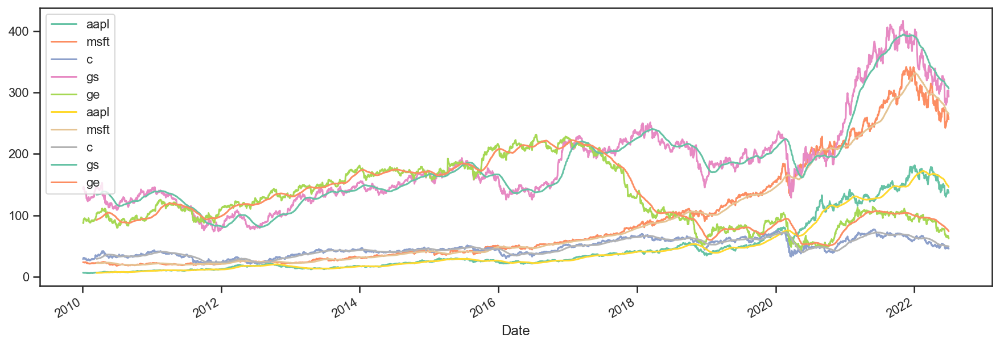
Looks legit.
Now that we have our data, we will need to create our security selection logic. Let’s create a basic Algo that will select the securities that are above their moving average.
Before we do that, let’s think about how we will code it. We could pass the SMA data and then extract the row (from the sma DataFrame) on the current date, compare the values to the current prices, and then keep a list of those securities where the price is above the SMA. This is the most straightforward approach. However, this is not very reusable because the logic within the Algo will be quite specific to the task at hand and if we wish to change the logic, we will have to write a new algo.
For example, what if we wanted to select securities that were below their sma? Or what if we only wanted securities that were 5% above their sma?
What we could do instead is pre-calculate the selection logic DataFrame (a fast, vectorized operation) and write a generic Algo that takes in this boolean DataFrame and returns the securities where the value is True on a given date. This will be must faster and much more reusable. Let’s see how the implementation looks like.
class SelectWhere(bt.Algo):
"""
Selects securities based on an indicator DataFrame.
Selects securities where the value is True on the current date (target.now).
Stops the AlgoStack if the current date is absent from the signal DataFrame.
Args:
* signal (DataFrame): DataFrame containing the signal (boolean DataFrame)
Sets:
* selected
"""
def __init__(self, signal):
self.signal = signal
def __call__(self, target):
# get signal on target.now
if target.now in self.signal.index:
sig = self.signal.loc[target.now]
# get indices where true as list
selected = list(sig.index[sig])
# save in temp - this will be used by the weighing algo
target.temp['selected'] = selected
return True
# stop the stack when no selection was available for this date
return False
So there we have it. Our selection Algo.
By the way, this Algo already exists - I just wanted to show you how you would code it from scratch.
Here is the code.
All we have to do now is pass in a signal matrix. In our case, it’s quite easy:
signal = data > sma
Simple, concise and more importantly, fast! Let’s move on and test the strategy.
# first we create the Strategy
s = bt.Strategy('above50sma', [SelectWhere(data > sma),
bt.algos.WeighEqually(),
bt.algos.Rebalance()])
# now we create the Backtest
t = bt.Backtest(s, data)
# and let's run it!
res = bt.run(t)
So just to recap, we created the strategy, created the backtest by joining Strategy+Data, and ran the backtest. Let’s see the results.
# what does the equity curve look like?
res.plot();
{kind=link}
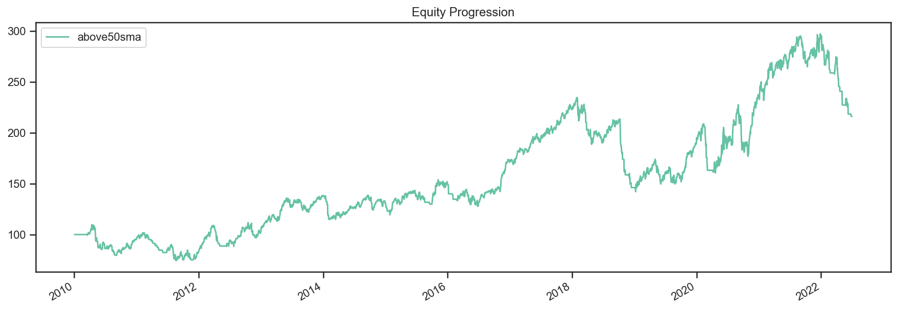
# and some performance stats
res.display()
Stat above50sma
------------------- ------------
Start 2010-01-03
End 2022-07-01
Risk-free rate 0.00%
Total Return 116.08%
Daily Sharpe 0.42
Daily Sortino 0.63
CAGR 6.36%
Max Drawdown -39.43%
Calmar Ratio 0.16
MTD 0.00%
3m -19.50%
6m -26.03%
YTD -26.03%
1Y -22.10%
3Y (ann.) 10.34%
5Y (ann.) 1.89%
10Y (ann.) 8.70%
Since Incep. (ann.) 6.36%
Daily Sharpe 0.42
Daily Sortino 0.63
Daily Mean (ann.) 8.07%
Daily Vol (ann.) 19.45%
Daily Skew -0.65
Daily Kurt 4.74
Best Day 5.78%
Worst Day -8.26%
Monthly Sharpe 0.39
Monthly Sortino 0.65
Monthly Mean (ann.) 8.59%
Monthly Vol (ann.) 21.86%
Monthly Skew -0.37
Monthly Kurt 0.73
Best Month 21.65%
Worst Month -17.26%
Yearly Sharpe 0.41
Yearly Sortino 0.83
Yearly Mean 9.78%
Yearly Vol 23.65%
Yearly Skew -0.88
Yearly Kurt -0.67
Best Year 34.85%
Worst Year -34.38%
Avg. Drawdown -3.56%
Avg. Drawdown Days 47.27
Avg. Up Month 4.76%
Avg. Down Month -5.35%
Win Year % 66.67%
Win 12m % 67.14%
Nothing stellar but at least you learnt something along the way (I hope).
Oh, and one more thing. If you were to write your own “library” of backtests, you might want to write yourself a helper function that would allow you to test different parameters and securities. That function might look something like this:
def above_sma(tickers, sma_per=50, start='2010-01-01', name='above_sma'):
"""
Long securities that are above their n period
Simple Moving Averages with equal weights.
"""
# download data
data = bt.get(tickers, start=start)
# calc sma
sma = data.rolling(sma_per).mean()
# create strategy
s = bt.Strategy(name, [SelectWhere(data > sma),
bt.algos.WeighEqually(),
bt.algos.Rebalance()])
# now we create the backtest
return bt.Backtest(s, data)
This function allows us to easily generate backtests. We could easily compare a few different SMA periods. Also, let’s see if we can beat a long-only allocation to the SPY.
# simple backtest to test long-only allocation
def long_only_ew(tickers, start='2010-01-01', name='long_only_ew'):
s = bt.Strategy(name, [bt.algos.RunOnce(),
bt.algos.SelectAll(),
bt.algos.WeighEqually(),
bt.algos.Rebalance()])
data = bt.get(tickers, start=start)
return bt.Backtest(s, data)
# create the backtests
tickers = 'aapl,msft,c,gs,ge'
sma10 = above_sma(tickers, sma_per=10, name='sma10')
sma20 = above_sma(tickers, sma_per=20, name='sma20')
sma40 = above_sma(tickers, sma_per=40, name='sma40')
benchmark = long_only_ew('spy', name='spy')
# run all the backtests!
res2 = bt.run(sma10, sma20, sma40, benchmark)
res2.plot(freq='m');
{kind=link}
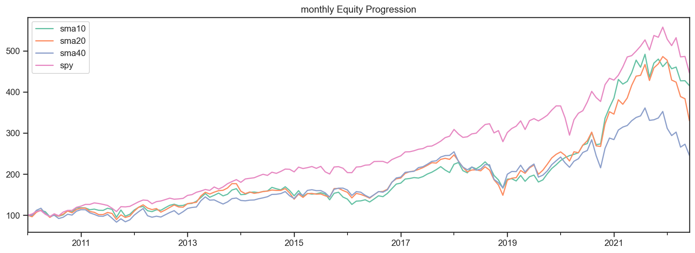
res2.display()
Stat sma10 sma20 sma40 spy
------------------- ---------- ---------- ---------- ----------
Start 2010-01-03 2010-01-03 2010-01-03 2010-01-03
End 2022-07-01 2022-07-01 2022-07-01 2022-07-01
Risk-free rate 0.00% 0.00% 0.00% 0.00%
Total Return 284.16% 229.80% 145.62% 321.22%
Daily Sharpe 0.63 0.58 0.47 0.75
Daily Sortino 0.99 0.91 0.73 1.15
CAGR 11.38% 10.03% 7.46% 12.20%
Max Drawdown -31.77% -40.72% -34.93% -33.72%
Calmar Ratio 0.36 0.25 0.21 0.36
MTD -0.76% 0.00% 0.00% -0.37%
3m -10.58% -22.25% -18.82% -16.66%
6m -10.71% -32.14% -30.31% -20.28%
YTD -10.71% -32.14% -30.31% -20.28%
1Y -13.63% -24.65% -27.20% -11.44%
3Y (ann.) 28.10% 14.77% 3.73% 10.10%
5Y (ann.) 15.80% 8.37% 1.96% 11.11%
10Y (ann.) 13.76% 10.96% 9.67% 12.78%
Since Incep. (ann.) 11.38% 10.03% 7.46% 12.20%
Daily Sharpe 0.63 0.58 0.47 0.75
Daily Sortino 0.99 0.91 0.73 1.15
Daily Mean (ann.) 12.88% 11.52% 9.01% 13.03%
Daily Vol (ann.) 20.48% 19.79% 18.97% 17.34%
Daily Skew -0.11 -0.29 -0.45 -0.59
Daily Kurt 6.61 6.23 4.32 11.75
Best Day 10.47% 10.47% 6.20% 9.06%
Worst Day -8.26% -8.26% -8.26% -10.94%
Monthly Sharpe 0.65 0.54 0.43 0.92
Monthly Sortino 1.18 1.02 0.75 1.62
Monthly Mean (ann.) 13.56% 11.95% 9.71% 13.00%
Monthly Vol (ann.) 20.96% 21.94% 22.42% 14.20%
Monthly Skew -0.02 0.22 -0.10 -0.40
Monthly Kurt 1.01 1.11 0.67 0.89
Best Month 22.75% 24.73% 21.97% 12.70%
Worst Month -16.94% -14.34% -15.86% -12.49%
Yearly Sharpe 0.54 0.43 0.40 0.80
Yearly Sortino 2.01 1.03 0.77 2.15
Yearly Mean 13.38% 13.94% 9.76% 12.67%
Yearly Vol 24.64% 32.80% 24.22% 15.79%
Yearly Skew 0.41 -0.15 -0.87 -0.68
Yearly Kurt -0.43 -0.96 -0.59 0.12
Best Year 62.47% 66.99% 39.35% 32.31%
Worst Year -18.59% -37.01% -32.06% -20.28%
Avg. Drawdown -3.95% -3.49% -3.68% -1.69%
Avg. Drawdown Days 40.43 35.12 48.79 15.92
Avg. Up Month 4.68% 5.00% 4.69% 3.20%
Avg. Down Month -5.00% -4.85% -5.70% -3.56%
Win Year % 58.33% 66.67% 75.00% 83.33%
Win 12m % 68.57% 66.43% 69.29% 91.43%
And there you have it. Beating the market ain’t that easy!
SMA Crossover Strategy¶
Let’s build on the last section to test a moving average crossover strategy. The easiest way to achieve this is to build an Algo similar to SelectWhere, but for the purpose of setting target weights. Let’s call this algo WeighTarget. This algo will take a DataFrame of target weights that we will pre-calculate.
Basically, when the 50 day moving average will be above the 200-day moving average, we will be long (+1 target weight). Conversely, when the 50 is below the 200, we will be short (-1 target weight).
Here’s the WeighTarget implementation (this Algo also already exists in the algos module):
class WeighTarget(bt.Algo):
"""
Sets target weights based on a target weight DataFrame.
Args:
* target_weights (DataFrame): DataFrame containing the target weights
Sets:
* weights
"""
def __init__(self, target_weights):
self.tw = target_weights
def __call__(self, target):
# get target weights on date target.now
if target.now in self.tw.index:
w = self.tw.loc[target.now]
# save in temp - this will be used by the weighing algo
# also dropping any na's just in case they pop up
target.temp['weights'] = w.dropna()
# return True because we want to keep on moving down the stack
return True
So let’s start with a simple 50-200 day sma crossover for a single security.
## download some data & calc SMAs
data = bt.get('spy', start='2010-01-01')
sma50 = data.rolling(50).mean()
sma200 = data.rolling(200).mean()
## now we need to calculate our target weight DataFrame
# first we will copy the sma200 DataFrame since our weights will have the same structure
tw = sma200.copy()
# set appropriate target weights
tw[sma50 > sma200] = 1.0
tw[sma50 <= sma200] = -1.0
# here we will set the weight to 0 - this is because the sma200 needs 200 data points before
# calculating its first point. Therefore, it will start with a bunch of nulls (NaNs).
tw[sma200.isnull()] = 0.0
Ok so we downloaded our data, calculated the simple moving averages, and then we setup our target weight (tw) DataFrame. Let’s take a look at our target weights to see if they make any sense.
# plot the target weights + chart of price & SMAs
tmp = bt.merge(tw, data, sma50, sma200)
tmp.columns = ['tw', 'price', 'sma50', 'sma200']
ax = tmp.plot(figsize=(15,5), secondary_y=['tw'])
{kind=link}
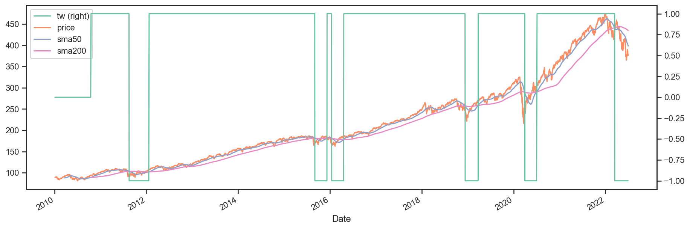
As mentioned earlier, it’s always a good idea to plot your strategy data. It is usually easier to spot logic/programming errors this way, especially when dealing with lots of data.
Now let’s move on with the Strategy & Backtest.
ma_cross = bt.Strategy('ma_cross', [WeighTarget(tw),
bt.algos.Rebalance()])
t = bt.Backtest(ma_cross, data)
res = bt.run(t)
res.plot();
{kind=link}
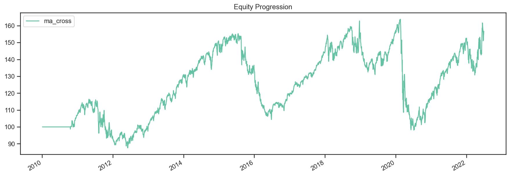
Ok great so there we have our basic moving average crossover strategy.
Exploring the Tree Structure¶
So far, we have explored strategies that allocate capital to securities. But what if we wanted to test a strategy that allocated capital to sub-strategies?
The most straightforward way would be to test the different sub-strategies, extract their equity curves and create “synthetic securities” that would basically just represent the returns achieved from allocating capital to the different sub-strategies.
Let’s see how this looks:
# first let's create a helper function to create a ma cross backtest
def ma_cross(ticker, start='2010-01-01',
short_ma=50, long_ma=200, name='ma_cross'):
# these are all the same steps as above
data = bt.get(ticker, start=start)
short_sma = data.rolling(short_ma).mean()
long_sma = data.rolling(long_ma).mean()
# target weights
tw = long_sma.copy()
tw[short_sma > long_sma] = 1.0
tw[short_sma <= long_sma] = -1.0
tw[long_sma.isnull()] = 0.0
# here we specify the children (3rd) argument to make sure the strategy
# has the proper universe. This is necessary in strategies of strategies
s = bt.Strategy(name, [WeighTarget(tw), bt.algos.Rebalance()], [ticker])
return bt.Backtest(s, data)
# ok now let's create a few backtests and gather the results.
# these will later become our "synthetic securities"
t1 = ma_cross('aapl', name='aapl_ma_cross')
t2 = ma_cross('msft', name='msft_ma_cross')
# let's run these strategies now
res = bt.run(t1, t2)
# now that we have run the strategies, let's extract
# the data to create "synthetic securities"
data = bt.merge(res['aapl_ma_cross'].prices, res['msft_ma_cross'].prices)
# now we have our new data. This data is basically the equity
# curves of both backtested strategies. Now we can just use this
# to test any old strategy, just like before.
s = bt.Strategy('s', [bt.algos.SelectAll(),
bt.algos.WeighInvVol(),
bt.algos.Rebalance()])
# create and run
t = bt.Backtest(s, data)
res = bt.run(t)
res.plot();
{kind=link}
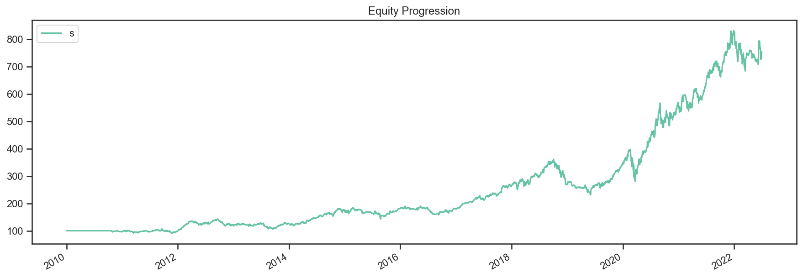
res.plot_weights();
{kind=link}
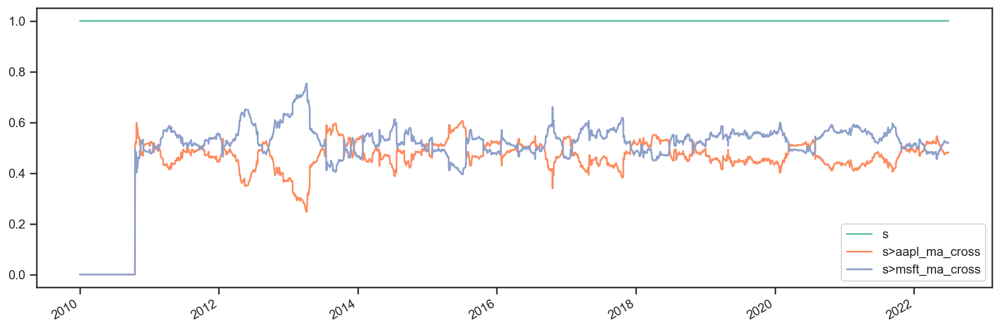
As we can see above, the process is a bit more involved, but it works. It is not very elegant though, and obtaining security-level allocation information is problematic.
Luckily, bt has built-in functionality for dealing with strategies of strategies. It uses the same general principal as demonstrated above but does it seamlessly. Basically, when a strategy is a child of another strategy, it will create a “paper trade” version of itself internally. As we run our strategy, it will run its internal “paper version” and use the returns from that strategy to populate the price property.
This means that the parent strategy can use the price information (which reflects the returns of the strategy had it been employed) to determine the appropriate allocation. Again, this is basically the same process as above, just packed into 1 step.
Perhaps some code will help:
# once again, we will create a few backtests
# these will be the child strategies
t1 = ma_cross('aapl', name='aapl_ma_cross')
t2 = ma_cross('msft', name='msft_ma_cross')
# let's extract the data object
data = bt.merge(t1.data, t2.data)
# now we create the parent strategy
# we specify the children to be the two
# strategies created above
s = bt.Strategy('s', [bt.algos.SelectAll(),
bt.algos.WeighInvVol(),
bt.algos.Rebalance()],
[t1.strategy, t2.strategy])
# create and run
t = bt.Backtest(s, data)
res = bt.run(t)
res.plot();
{kind=link}
res.plot_weights();
{kind=link}
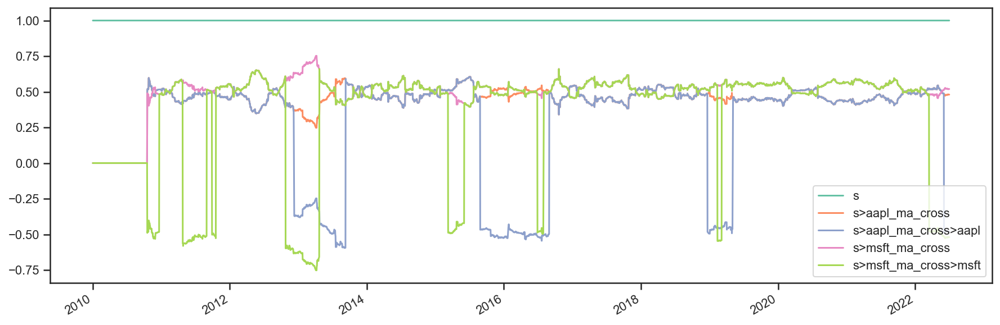
So there you have it. Simpler, and more complete.
Buy and Hold Strategy¶
import numpy as np
import pandas as pd
import matplotlib.pyplot as plt
import ffn
import bt
%matplotlib inline
Create Fake Index Data¶
names = ['foo','bar','rf']
dates = pd.date_range(start='2017-01-01',end='2017-12-31', freq=pd.tseries.offsets.BDay())
n = len(dates)
rdf = pd.DataFrame(
np.zeros((n, len(names))),
index = dates,
columns = names
)
np.random.seed(1)
rdf['foo'] = np.random.normal(loc = 0.1/n,scale=0.2/np.sqrt(n),size=n)
rdf['bar'] = np.random.normal(loc = 0.04/n,scale=0.05/np.sqrt(n),size=n)
rdf['rf'] = 0.
pdf = 100*np.cumprod(1+rdf)
pdf.plot();
{kind=link}
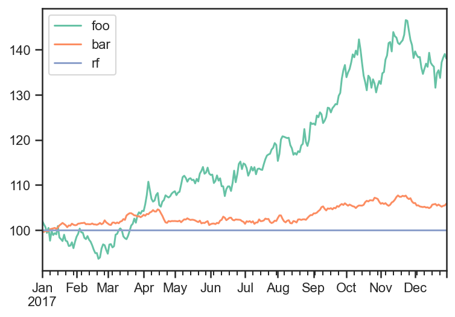
Build Strategy¶
# algo to fire on the beginning of every month and to run on the first date
runMonthlyAlgo = bt.algos.RunMonthly(
run_on_first_date=True
)
# algo to set the weights
# it will only run when runMonthlyAlgo returns true
# which only happens on the first of every month
weights = pd.Series([0.6,0.4,0.],index = rdf.columns)
weighSpecifiedAlgo = bt.algos.WeighSpecified(**weights)
# algo to rebalance the current weights to weights set by weighSpecified
# will only run when weighSpecifiedAlgo returns true
# which happens every time it runs
rebalAlgo = bt.algos.Rebalance()
# a strategy that rebalances monthly to specified weights
strat = bt.Strategy('static',
[
runMonthlyAlgo,
weighSpecifiedAlgo,
rebalAlgo
]
)
Run Backtest¶
Note: The logic of the strategy is separate from the data used in the backtest.
# set integer_positions=False when positions are not required to be integers(round numbers)
backtest = bt.Backtest(
strat,
pdf,
integer_positions=False
)
res = bt.run(backtest)
res.stats
| static | |
|---|---|
| start | 2017-01-01 00:00:00 |
| end | 2017-12-29 00:00:00 |
| rf | 0.0 |
| total_return | 0.229372 |
| cagr | 0.231653 |
| max_drawdown | -0.069257 |
| calmar | 3.344851 |
| mtd | -0.000906 |
| three_month | 0.005975 |
| six_month | 0.142562 |
| ytd | 0.229372 |
| one_year | NaN |
| three_year | NaN |
| five_year | NaN |
| ten_year | NaN |
| incep | 0.231653 |
| daily_sharpe | 1.804549 |
| daily_sortino | 3.306154 |
| daily_mean | 0.206762 |
| daily_vol | 0.114578 |
| daily_skew | 0.012208 |
| daily_kurt | -0.04456 |
| best_day | 0.020402 |
| worst_day | -0.0201 |
| monthly_sharpe | 2.806444 |
| monthly_sortino | 15.352486 |
| monthly_mean | 0.257101 |
| monthly_vol | 0.091611 |
| monthly_skew | 0.753881 |
| monthly_kurt | 0.456278 |
| best_month | 0.073657 |
| worst_month | -0.014592 |
| yearly_sharpe | NaN |
| yearly_sortino | NaN |
| yearly_mean | NaN |
| yearly_vol | NaN |
| yearly_skew | NaN |
| yearly_kurt | NaN |
| best_year | NaN |
| worst_year | NaN |
| avg_drawdown | -0.016052 |
| avg_drawdown_days | 12.695652 |
| avg_up_month | 0.03246 |
| avg_down_month | -0.008001 |
| win_year_perc | NaN |
| twelve_month_win_perc | NaN |
res.prices.head()
| static | |
|---|---|
| 2017-01-01 | 100.000000 |
| 2017-01-02 | 100.000000 |
| 2017-01-03 | 99.384719 |
| 2017-01-04 | 99.121677 |
| 2017-01-05 | 98.316364 |
res.plot_security_weights()
{kind=link}
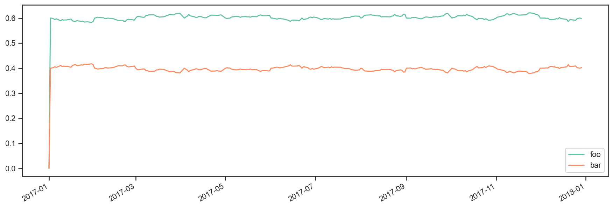
Strategy value over time
performanceStats = res['static']
#performance stats is an ffn object
res.backtest_list[0].strategy.values.plot();
{kind=link}
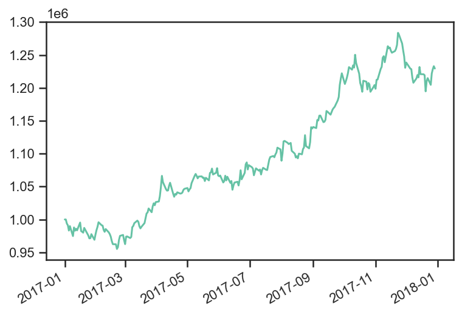
Strategy Outlays
Outlays are the total dollar amount spent(gained) by a purchase(sale) of securities.
res.backtest_list[0].strategy.outlays.plot();
{kind=link}
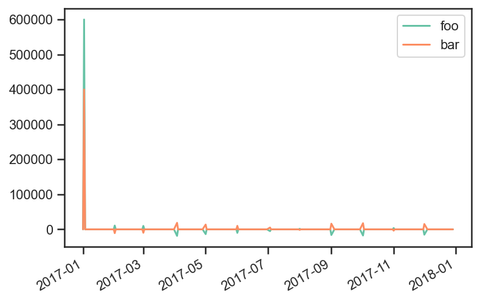
You can get the change in number of shares purchased a
security_names = res.backtest_list[0].strategy.outlays.columns
res.backtest_list[0].strategy.outlays/pdf.loc[:,security_names]
res.backtest_list[0].positions.diff(1)
res.backtest_list[0].positions
| foo | bar | |
|---|---|---|
| 2017-01-01 | 0.000000 | 0.000000 |
| 2017-01-02 | 5879.285683 | 3998.068018 |
| 2017-01-03 | 5879.285683 | 3998.068018 |
| 2017-01-04 | 5879.285683 | 3998.068018 |
| 2017-01-05 | 5879.285683 | 3998.068018 |
| ... | ... | ... |
| 2017-12-25 | 5324.589093 | 4673.239436 |
| 2017-12-26 | 5324.589093 | 4673.239436 |
| 2017-12-27 | 5324.589093 | 4673.239436 |
| 2017-12-28 | 5324.589093 | 4673.239436 |
| 2017-12-29 | 5324.589093 | 4673.239436 |
261 rows × 2 columns
Trend Example 1¶
import matplotlib.pyplot as plt
import numpy as np
import pandas as pd
import ffn
import bt
%matplotlib inline
Create fake data¶
rf = 0.04
np.random.seed(1)
mus = np.random.normal(loc=0.05,scale=0.02,size=5) + rf
sigmas = (mus - rf)/0.3 + np.random.normal(loc=0.,scale=0.01,size=5)
num_years = 10
num_months_per_year = 12
num_days_per_month = 21
num_days_per_year = num_months_per_year*num_days_per_month
rdf = pd.DataFrame(
index = pd.date_range(
start="2008-01-02",
periods=num_years*num_months_per_year*num_days_per_month,
freq="B"
),
columns=['foo','bar','baz','fake1','fake2']
)
for i,mu in enumerate(mus):
sigma = sigmas[i]
rdf.iloc[:,i] = np.random.normal(
loc=mu/num_days_per_year,
scale=sigma/np.sqrt(num_days_per_year),
size=rdf.shape[0]
)
pdf = np.cumprod(1+rdf)*100
pdf.plot();
{kind=link}
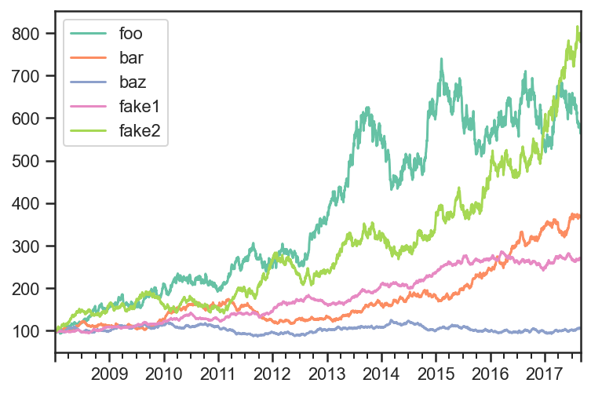
Create Trend signal over the last 12 months¶
sma = pdf.rolling(window=num_days_per_month*12,center=False).median().shift(1)
plt.plot(pdf.index,pdf['foo'])
plt.plot(sma.index,sma['foo'])
plt.show()
{kind=link}
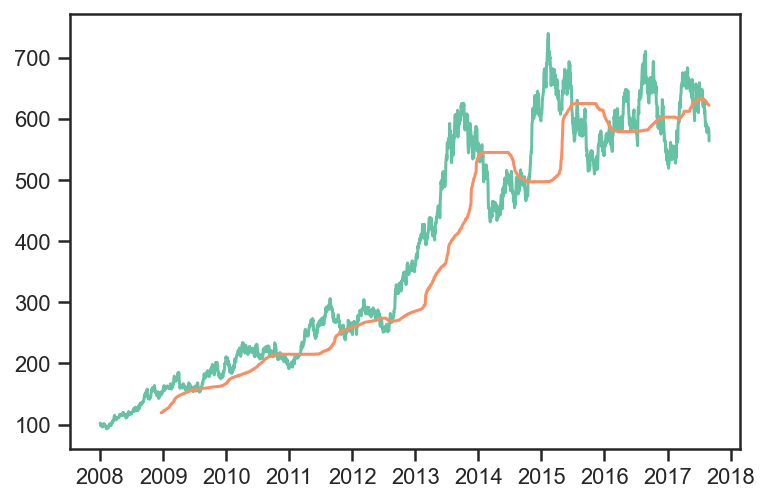
#sma with 1 day lag
sma.tail()
| foo | bar | baz | fake1 | fake2 | |
|---|---|---|---|---|---|
| 2017-08-23 | 623.241267 | 340.774506 | 99.764885 | 263.491447 | 619.963986 |
| 2017-08-24 | 623.167989 | 341.096742 | 99.764885 | 263.502145 | 620.979948 |
| 2017-08-25 | 622.749149 | 341.316672 | 99.764885 | 263.502145 | 622.421401 |
| 2017-08-28 | 622.353039 | 341.494307 | 99.807732 | 263.517071 | 622.962579 |
| 2017-08-29 | 622.153294 | 341.662442 | 99.807732 | 263.517071 | 622.992416 |
#sma with 0 day lag
pdf.rolling(window=num_days_per_month*12,center=False).median().tail()
| foo | bar | baz | fake1 | fake2 | |
|---|---|---|---|---|---|
| 2017-08-23 | 623.167989 | 341.096742 | 99.764885 | 263.502145 | 620.979948 |
| 2017-08-24 | 622.749149 | 341.316672 | 99.764885 | 263.502145 | 622.421401 |
| 2017-08-25 | 622.353039 | 341.494307 | 99.807732 | 263.517071 | 622.962579 |
| 2017-08-28 | 622.153294 | 341.662442 | 99.807732 | 263.517071 | 622.992416 |
| 2017-08-29 | 621.907867 | 341.948212 | 99.807732 | 263.634283 | 624.310473 |
# target weights
trend = sma.copy()
trend[pdf > sma] = True
trend[pdf <= sma] = False
trend[sma.isnull()] = False
trend.tail()
| foo | bar | baz | fake1 | fake2 | |
|---|---|---|---|---|---|
| 2017-08-23 | False | True | True | True | True |
| 2017-08-24 | False | True | True | True | True |
| 2017-08-25 | False | True | True | True | True |
| 2017-08-28 | False | True | True | True | True |
| 2017-08-29 | False | True | True | True | True |
Compare EW and 1/vol
Both strategies rebalance daily using trend with 1 day lag and weights limited to 40%.
tsmom_invvol_strat = bt.Strategy(
'tsmom_invvol',
[
bt.algos.RunDaily(),
bt.algos.SelectWhere(trend),
bt.algos.WeighInvVol(),
bt.algos.LimitWeights(limit=0.4),
bt.algos.Rebalance()
]
)
tsmom_ew_strat = bt.Strategy(
'tsmom_ew',
[
bt.algos.RunDaily(),
bt.algos.SelectWhere(trend),
bt.algos.WeighEqually(),
bt.algos.LimitWeights(limit=0.4),
bt.algos.Rebalance()
]
)
# create and run
tsmom_invvol_bt = bt.Backtest(
tsmom_invvol_strat,
pdf,
initial_capital=50000000.0,
commissions=lambda q, p: max(100, abs(q) * 0.0021),
integer_positions=False,
progress_bar=True
)
tsmom_invvol_res = bt.run(tsmom_invvol_bt)
tsmom_ew_bt = bt.Backtest(
tsmom_ew_strat,
pdf,
initial_capital=50000000.0,
commissions=lambda q, p: max(100, abs(q) * 0.0021),
integer_positions=False,
progress_bar=True
)
tsmom_ew_res = bt.run(tsmom_ew_bt)
tsmom_invvol
0% [############################# ] 100% | ETA: 00:00:00tsmom_ew
0% [############################# ] 100% | ETA: 00:00:00
ax = plt.subplot()
ax.plot(tsmom_ew_res.prices.index,tsmom_ew_res.prices,label='EW')
pdf.plot(ax=ax)
ax.legend()
plt.legend()
plt.show()
{kind=link}
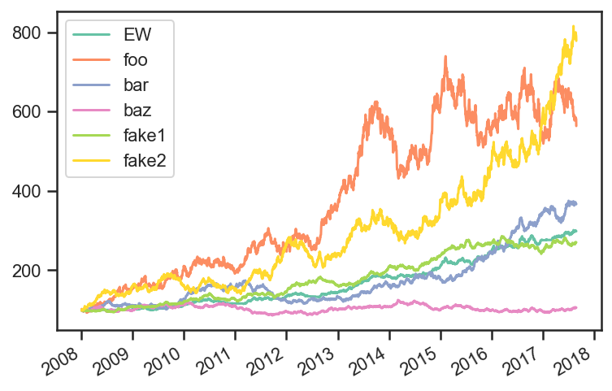
tsmom_ew_res.stats
| tsmom_ew | |
|---|---|
| start | 2008-01-01 00:00:00 |
| end | 2017-08-29 00:00:00 |
| rf | 0.0 |
| total_return | 1.982933 |
| cagr | 0.119797 |
| max_drawdown | -0.103421 |
| calmar | 1.158343 |
| mtd | 0.017544 |
| three_month | 0.040722 |
| six_month | 0.079362 |
| ytd | 0.08107 |
| one_year | 0.100432 |
| three_year | 0.159895 |
| five_year | 0.172284 |
| ten_year | 0.119797 |
| incep | 0.119797 |
| daily_sharpe | 1.356727 |
| daily_sortino | 2.332895 |
| daily_mean | 0.112765 |
| daily_vol | 0.083116 |
| daily_skew | 0.029851 |
| daily_kurt | 0.96973 |
| best_day | 0.02107 |
| worst_day | -0.021109 |
| monthly_sharpe | 1.373241 |
| monthly_sortino | 2.966223 |
| monthly_mean | 0.118231 |
| monthly_vol | 0.086096 |
| monthly_skew | -0.059867 |
| monthly_kurt | 0.571064 |
| best_month | 0.070108 |
| worst_month | -0.064743 |
| yearly_sharpe | 1.741129 |
| yearly_sortino | inf |
| yearly_mean | 0.129033 |
| yearly_vol | 0.074109 |
| yearly_skew | 0.990397 |
| yearly_kurt | 1.973883 |
| best_year | 0.285249 |
| worst_year | 0.024152 |
| avg_drawdown | -0.015516 |
| avg_drawdown_days | 25.223214 |
| avg_up_month | 0.024988 |
| avg_down_month | -0.012046 |
| win_year_perc | 1.0 |
| twelve_month_win_perc | 0.971429 |
Trend Example 2¶
import numpy as np
import pandas as pd
import bt
import matplotlib.pyplot as plt
%matplotlib inline
np.random.seed(0)
returns = np.random.normal(0.08/12,0.2/np.sqrt(12),12*10)
pdf = pd.DataFrame(
np.cumprod(1+returns),
index = pd.date_range(start="2008-01-01",periods=12*10,freq="m"),
columns=['foo']
)
pdf.plot();
{kind=link}
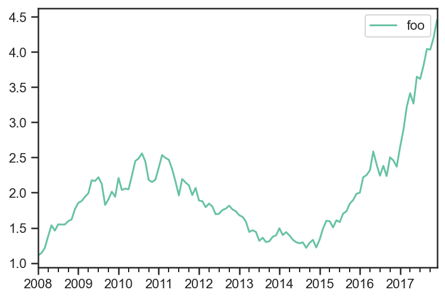
runMonthlyAlgo = bt.algos.RunMonthly()
rebalAlgo = bt.algos.Rebalance()
class Signal(bt.Algo):
"""
Mostly copied from StatTotalReturn
Sets temp['Signal'] with total returns over a given period.
Sets the 'Signal' based on the total return of each
over a given lookback period.
Args:
* lookback (DateOffset): lookback period.
* lag (DateOffset): Lag interval. Total return is calculated in
the interval [now - lookback - lag, now - lag]
Sets:
* stat
Requires:
* selected
"""
def __init__(self, lookback=pd.DateOffset(months=3),
lag=pd.DateOffset(days=0)):
super(Signal, self).__init__()
self.lookback = lookback
self.lag = lag
def __call__(self, target):
selected = 'foo'
t0 = target.now - self.lag
if target.universe[selected].index[0] > t0:
return False
prc = target.universe[selected].loc[t0 - self.lookback:t0]
trend = prc.iloc[-1]/prc.iloc[0] - 1
signal = trend > 0.
if signal:
target.temp['Signal'] = 1.
else:
target.temp['Signal'] = 0.
return True
signalAlgo = Signal(pd.DateOffset(months=12),pd.DateOffset(months=1))
class WeighFromSignal(bt.Algo):
"""
Sets temp['weights'] from the signal.
Sets:
* weights
Requires:
* selected
"""
def __init__(self):
super(WeighFromSignal, self).__init__()
def __call__(self, target):
selected = 'foo'
if target.temp['Signal'] is None:
raise(Exception('No Signal!'))
target.temp['weights'] = {selected : target.temp['Signal']}
return True
weighFromSignalAlgo = WeighFromSignal()
s = bt.Strategy(
'example1',
[
runMonthlyAlgo,
signalAlgo,
weighFromSignalAlgo,
rebalAlgo
]
)
t = bt.Backtest(s, pdf, integer_positions=False, progress_bar=True)
res = bt.run(t)
example1
0% [############################# ] 100% | ETA: 00:00:00
res.plot_security_weights();
{kind=link}
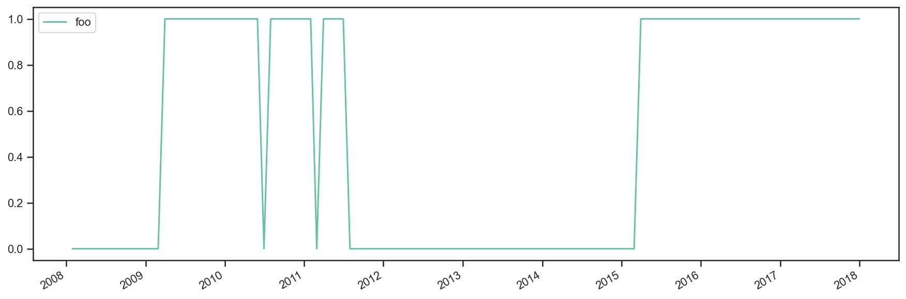
t.positions
| foo | |
|---|---|
| 2008-01-30 | 0.000000 |
| 2008-01-31 | 0.000000 |
| 2008-02-29 | 0.000000 |
| 2008-03-31 | 0.000000 |
| 2008-04-30 | 0.000000 |
| ... | ... |
| 2017-08-31 | 631321.251898 |
| 2017-09-30 | 631321.251898 |
| 2017-10-31 | 631321.251898 |
| 2017-11-30 | 631321.251898 |
| 2017-12-31 | 631321.251898 |
121 rows × 1 columns
res.prices.tail()
| example1 | |
|---|---|
| 2017-08-31 | 240.302579 |
| 2017-09-30 | 255.046653 |
| 2017-10-31 | 254.464421 |
| 2017-11-30 | 265.182603 |
| 2017-12-31 | 281.069771 |
res.stats
| example1 | |
|---|---|
| start | 2008-01-30 00:00:00 |
| end | 2017-12-31 00:00:00 |
| rf | 0.0 |
| total_return | 1.810698 |
| cagr | 0.109805 |
| max_drawdown | -0.267046 |
| calmar | 0.411186 |
| mtd | 0.05991 |
| three_month | 0.102033 |
| six_month | 0.22079 |
| ytd | 0.879847 |
| one_year | 0.879847 |
| three_year | 0.406395 |
| five_year | 0.227148 |
| ten_year | 0.109805 |
| incep | 0.109805 |
| daily_sharpe | 3.299555 |
| daily_sortino | 6.352869 |
| daily_mean | 2.448589 |
| daily_vol | 0.742097 |
| daily_skew | 0.307861 |
| daily_kurt | 1.414455 |
| best_day | 0.137711 |
| worst_day | -0.14073 |
| monthly_sharpe | 0.723148 |
| monthly_sortino | 1.392893 |
| monthly_mean | 0.117579 |
| monthly_vol | 0.162594 |
| monthly_skew | 0.301545 |
| monthly_kurt | 1.379006 |
| best_month | 0.137711 |
| worst_month | -0.14073 |
| yearly_sharpe | 0.503939 |
| yearly_sortino | 5.019272 |
| yearly_mean | 0.14814 |
| yearly_vol | 0.293964 |
| yearly_skew | 2.317496 |
| yearly_kurt | 5.894955 |
| best_year | 0.879847 |
| worst_year | -0.088543 |
| avg_drawdown | -0.091255 |
| avg_drawdown_days | 369.714286 |
| avg_up_month | 0.064341 |
| avg_down_month | -0.012928 |
| win_year_perc | 0.555556 |
| twelve_month_win_perc | 0.46789 |
Strategy Combination¶
This notebook creates a parent strategy(combined) with 2 child strategies(Equal Weight, Inv Vol).
Alternatively, it creates the 2 child strategies, runs the backtest, combines the results, and creates a parent strategy using both of the backtests.
import numpy as np
import pandas as pd
import matplotlib.pyplot as plt
import ffn
import bt
%matplotlib inline
Create fake data¶
rf = 0.04
np.random.seed(1)
mus = np.random.normal(loc=0.05,scale=0.02,size=5) + rf
sigmas = (mus - rf)/0.3 + np.random.normal(loc=0.,scale=0.01,size=5)
num_years = 10
num_months_per_year = 12
num_days_per_month = 21
num_days_per_year = num_months_per_year*num_days_per_month
rdf = pd.DataFrame(
index = pd.date_range(
start="2008-01-02",
periods=num_years*num_months_per_year*num_days_per_month,
freq="B"
),
columns=['foo','bar','baz','fake1','fake2']
)
for i,mu in enumerate(mus):
sigma = sigmas[i]
rdf.iloc[:,i] = np.random.normal(
loc=mu/num_days_per_year,
scale=sigma/np.sqrt(num_days_per_year),
size=rdf.shape[0]
)
pdf = np.cumprod(1+rdf)*100
pdf.iloc[0,:] = 100
pdf.plot();

strategy_names = np.array(
[
'Equal Weight',
'Inv Vol'
]
)
runMonthlyAlgo = bt.algos.RunMonthly(
run_on_first_date=True,
run_on_end_of_period=True
)
selectAllAlgo = bt.algos.SelectAll()
rebalanceAlgo = bt.algos.Rebalance()
strats = []
tests = []
for i,s in enumerate(strategy_names):
if s == "Equal Weight":
wAlgo = bt.algos.WeighEqually()
elif s == "Inv Vol":
wAlgo = bt.algos.WeighInvVol()
strat = bt.Strategy(
str(s),
[
runMonthlyAlgo,
selectAllAlgo,
wAlgo,
rebalanceAlgo
]
)
strats.append(strat)
t = bt.Backtest(
strat,
pdf,
integer_positions = False,
progress_bar=False
)
tests.append(t)
combined_strategy = bt.Strategy(
'Combined',
algos = [
runMonthlyAlgo,
selectAllAlgo,
bt.algos.WeighEqually(),
rebalanceAlgo
],
children = [x.strategy for x in tests]
)
combined_test = bt.Backtest(
combined_strategy,
pdf,
integer_positions = False,
progress_bar = False
)
res = bt.run(combined_test)
res.prices.plot();

res.get_security_weights().plot();

In order to get the weights of each strategy, you can run each strategy, get the prices for each strategy, combine them into one price dataframe, run the combined strategy on the new data set.
strategy_names = np.array(
[
'Equal Weight',
'Inv Vol'
]
)
runMonthlyAlgo = bt.algos.RunMonthly(
run_on_first_date=True,
run_on_end_of_period=True
)
selectAllAlgo = bt.algos.SelectAll()
rebalanceAlgo = bt.algos.Rebalance()
strats = []
tests = []
results = []
for i,s in enumerate(strategy_names):
if s == "Equal Weight":
wAlgo = bt.algos.WeighEqually()
elif s == "Inv Vol":
wAlgo = bt.algos.WeighInvVol()
strat = bt.Strategy(
s,
[
runMonthlyAlgo,
selectAllAlgo,
wAlgo,
rebalanceAlgo
]
)
strats.append(strat)
t = bt.Backtest(
strat,
pdf,
integer_positions = False,
progress_bar=False
)
tests.append(t)
res = bt.run(t)
results.append(res)
fig, ax = plt.subplots(nrows=1,ncols=1)
for i,r in enumerate(results):
r.plot(ax=ax)

merged_prices_df = bt.merge(results[0].prices,results[1].prices)
combined_strategy = bt.Strategy(
'Combined',
algos = [
runMonthlyAlgo,
selectAllAlgo,
bt.algos.WeighEqually(),
rebalanceAlgo
]
)
combined_test = bt.Backtest(
combined_strategy,
merged_prices_df,
integer_positions = False,
progress_bar = False
)
res = bt.run(combined_test)
res.plot();

res.get_security_weights().plot();

Target Volatility¶
import numpy as np
import pandas as pd
import matplotlib.pyplot as plt
import ffn
import bt
%matplotlib inline
Create Fake Index Data¶
names = ['foo','bar','rf']
dates = pd.date_range(start='2015-01-01',end='2018-12-31', freq=pd.tseries.offsets.BDay())
n = len(dates)
rdf = pd.DataFrame(
np.zeros((n, len(names))),
index = dates,
columns = names
)
np.random.seed(1)
rdf['foo'] = np.random.normal(loc = 0.1/252,scale=0.2/np.sqrt(252),size=n)
rdf['bar'] = np.random.normal(loc = 0.04/252,scale=0.05/np.sqrt(252),size=n)
rdf['rf'] = 0.
pdf = 100*np.cumprod(1+rdf)
pdf.plot();
{kind=link}
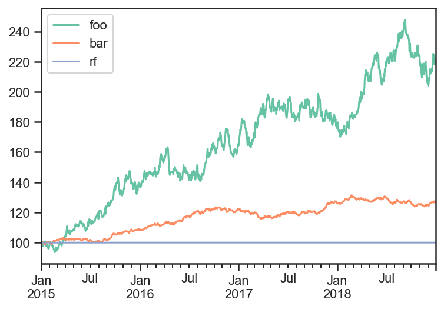
Build Strategy¶
# algo to fire on the beginning of every week and to run on the first date
runWeeklyAlgo = bt.algos.RunWeekly(
run_on_first_date=True
)
selectTheseAlgo = bt.algos.SelectThese(['foo','bar'])
# algo to set the weights to 1/vol contributions from each asset
# with data over the last 12 months excluding yesterday
weighInvVolAlgo = bt.algos.WeighInvVol(
lookback=pd.DateOffset(months=12),
lag=pd.DateOffset(days=1)
)
# algo to set overall volatility of the portfolio to an annualized 10%
targetVolAlgo = bt.algos.TargetVol(
0.1,
lookback=pd.DateOffset(months=12),
lag=pd.DateOffset(days=1),
covar_method='standard',
annualization_factor=252
)
# algo to rebalance the current weights to weights set in target.temp
rebalAlgo = bt.algos.Rebalance()
# a strategy that rebalances monthly to specified weights
strat = bt.Strategy('static',
[
runWeeklyAlgo,
selectTheseAlgo,
weighInvVolAlgo,
targetVolAlgo,
rebalAlgo
]
)
Run Backtest¶
Note: The logic of the strategy is separate from the data used in the backtest.
# set integer_positions=False when positions are not required to be integers(round numbers)
backtest = bt.Backtest(
strat,
pdf,
integer_positions=False
)
res = bt.run(backtest)
You can see the realized volatility below is close to the targeted 10% volatility.
fig, ax = plt.subplots(nrows=1,ncols=1)
(res.prices.pct_change().rolling(window=12*20).std()*np.sqrt(252)).plot(ax = ax)
ax.set_title('Rolling Volatility')
ax.plot();
{kind=link}
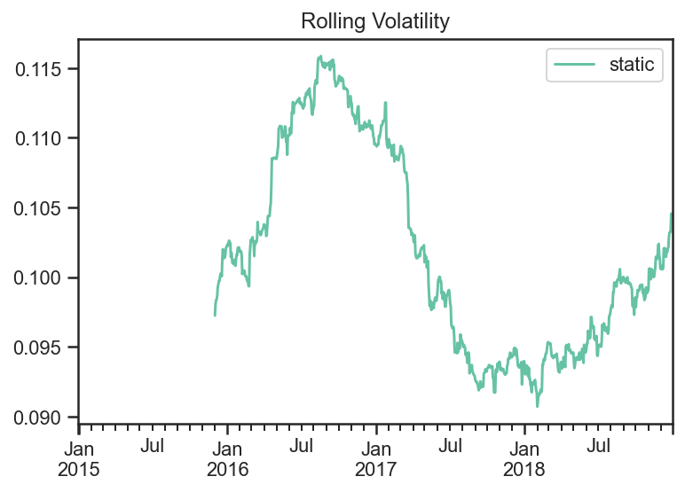
Because we are using a 1/vol allocation bar, the less risky security, has a much smaller weight.
fig, ax = plt.subplots(nrows=1,ncols=1)
res.get_security_weights().plot(ax = ax)
ax.set_title('Weights')
ax.plot();
{kind=link}
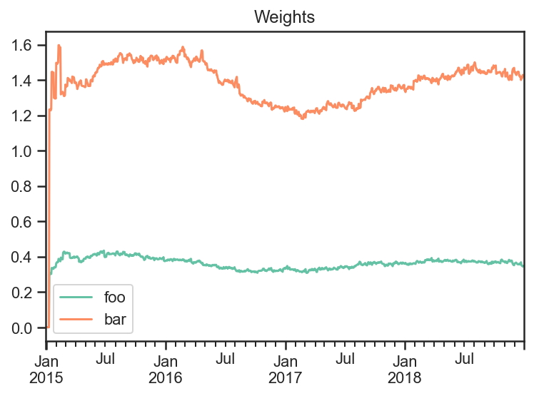
If we plot the total risk contribution of each asset class and divide by the total volatility, then we can see that both asset’s contribute roughly similar amounts of volatility.
weights = res.get_security_weights()
rolling_cov = pdf.loc[:,weights.columns].pct_change().rolling(window=12*20).cov()*252
trc = pd.DataFrame(
np.nan,
index = weights.index,
columns = weights.columns
)
for dt in pdf.index:
trc.loc[dt,:] = weights.loc[dt,:].values*rolling_cov.loc[dt,:].values@weights.loc[dt,:].values/np.sqrt(weights.loc[dt,:].values@rolling_cov.loc[dt,:].values@weights.loc[dt,:].values)
fig, ax = plt.subplots(nrows=1,ncols=1)
trc.plot(ax=ax)
ax.set_title('% Total Risk Contribution')
ax.plot();
{kind=link}
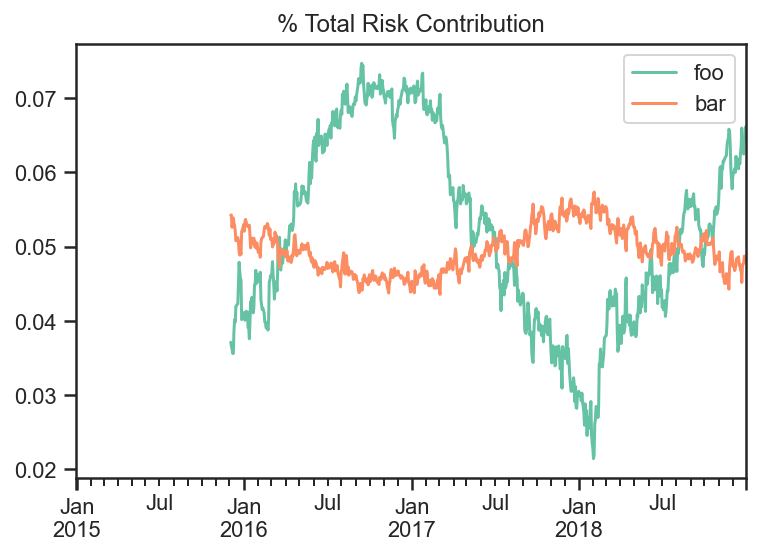
Equally Weighted Risk Contributions Portfolio¶
import numpy as np
import pandas as pd
import matplotlib.pyplot as plt
import ffn
import bt
%matplotlib inline
Create Fake Index Data¶
mean = np.array([0.05/252 + 0.02/252, 0.03/252 + 0.02/252])
volatility = np.array([0.2/np.sqrt(252), 0.05/np.sqrt(252)])
variance = np.power(volatility,2)
correlation = np.array(
[
[1, 0.25],
[0.25,1]
]
)
covariance = np.zeros((2,2))
for i in range(len(variance)):
for j in range(len(variance)):
covariance[i,j] = correlation[i,j]*volatility[i]*volatility[j]
covariance
array([[1.58730159e-04, 9.92063492e-06],
[9.92063492e-06, 9.92063492e-06]])
names = ['foo','bar','rf']
dates = pd.date_range(start='2015-01-01',end='2018-12-31', freq=pd.tseries.offsets.BDay())
n = len(dates)
rdf = pd.DataFrame(
np.zeros((n, len(names))),
index = dates,
columns = names
)
np.random.seed(1)
rdf.loc[:,['foo','bar']] = np.random.multivariate_normal(mean,covariance,size=n)
rdf['rf'] = 0.02/252
pdf = 100*np.cumprod(1+rdf)
pdf.plot();
{kind=link}
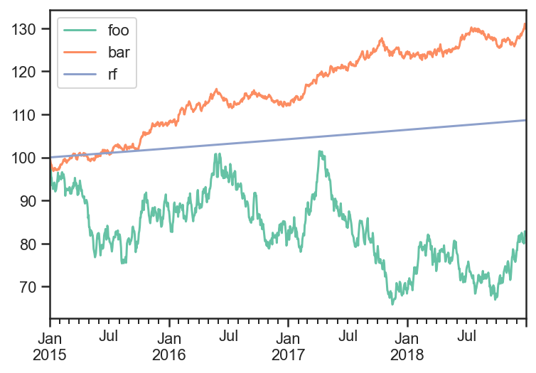
Build and run ERC Strategy¶
You can read more about ERC here. http://thierry-roncalli.com/download/erc.pdf
runAfterDaysAlgo = bt.algos.RunAfterDays(
20*6 + 1
)
selectTheseAlgo = bt.algos.SelectThese(['foo','bar'])
# algo to set the weights so each asset contributes the same amount of risk
# with data over the last 6 months excluding yesterday
weighERCAlgo = bt.algos.WeighERC(
lookback=pd.DateOffset(days=20*6),
covar_method='standard',
risk_parity_method='slsqp',
maximum_iterations=1000,
tolerance=1e-9,
lag=pd.DateOffset(days=1)
)
rebalAlgo = bt.algos.Rebalance()
strat = bt.Strategy(
'ERC',
[
runAfterDaysAlgo,
selectTheseAlgo,
weighERCAlgo,
rebalAlgo
]
)
backtest = bt.Backtest(
strat,
pdf,
integer_positions=False
)
res_target = bt.run(backtest)
res_target.get_security_weights().plot();
{kind=link}
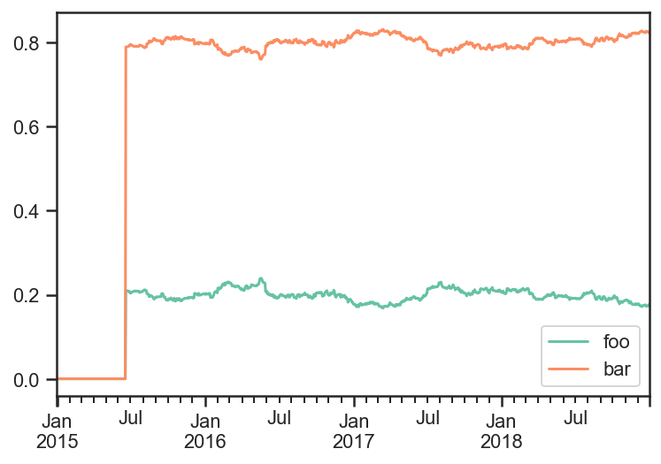
res_target.prices.plot();
{kind=link}
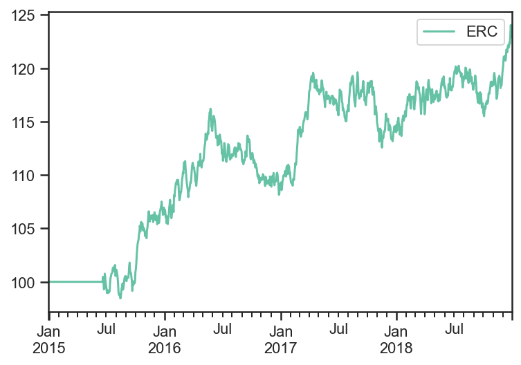
weights_target = res_target.get_security_weights().copy()
rolling_cov_target = pdf.loc[:,weights_target.columns].pct_change().rolling(window=252).cov()*252
trc_target = pd.DataFrame(
np.nan,
index = weights_target.index,
columns = weights_target.columns
)
for dt in pdf.index:
trc_target.loc[dt,:] = weights_target.loc[dt,:].values*(rolling_cov_target.loc[dt,:].values@weights_target.loc[dt,:].values)/np.sqrt(weights_target.loc[dt,:].values@rolling_cov_target.loc[dt,:].values@weights_target.loc[dt,:].values)
fig, ax = plt.subplots(nrows=1,ncols=1)
trc_target.plot(ax=ax)
ax.set_title('Total Risk Contribution')
ax.plot();
{kind=link}
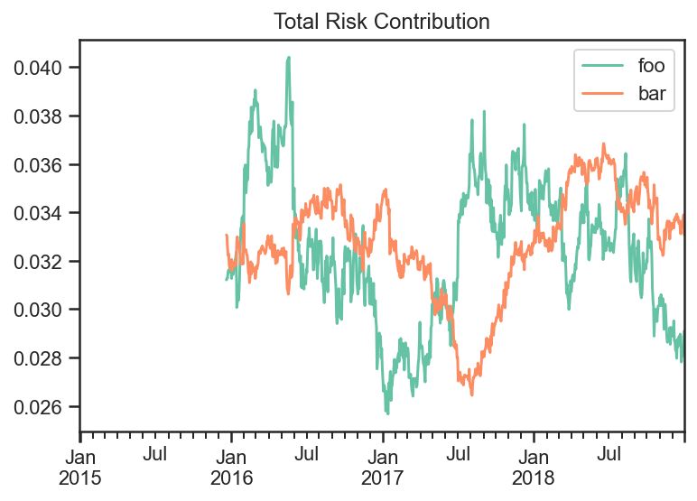
You can see the Total Risk Contribution is roughly equal from both assets.
Predicted Tracking Error Rebalance Portfolio¶
import numpy as np
import pandas as pd
import matplotlib.pyplot as plt
import ffn
import bt
%matplotlib inline
Create Fake Index Data¶
names = ['foo','bar','rf']
dates = pd.date_range(start='2015-01-01',end='2018-12-31', freq=pd.tseries.offsets.BDay())
n = len(dates)
rdf = pd.DataFrame(
np.zeros((n, len(names))),
index = dates,
columns = names
)
np.random.seed(1)
rdf['foo'] = np.random.normal(loc = 0.1/252,scale=0.2/np.sqrt(252),size=n)
rdf['bar'] = np.random.normal(loc = 0.04/252,scale=0.05/np.sqrt(252),size=n)
rdf['rf'] = 0.
pdf = 100*np.cumprod(1+rdf)
pdf.plot();

Build and run Target Strategy¶
I will first run a strategy that rebalances everyday.
Then I will use those weights as target to rebalance to whenever the PTE is too high.
selectTheseAlgo = bt.algos.SelectThese(['foo','bar'])
# algo to set the weights to 1/vol contributions from each asset
# with data over the last 3 months excluding yesterday
weighInvVolAlgo = bt.algos.WeighInvVol(
lookback=pd.DateOffset(months=3),
lag=pd.DateOffset(days=1)
)
# algo to rebalance the current weights to weights set in target.temp
rebalAlgo = bt.algos.Rebalance()
# a strategy that rebalances daily to 1/vol weights
strat = bt.Strategy(
'Target',
[
selectTheseAlgo,
weighInvVolAlgo,
rebalAlgo
]
)
# set integer_positions=False when positions are not required to be integers(round numbers)
backtest = bt.Backtest(
strat,
pdf,
integer_positions=False
)
res_target = bt.run(backtest)
res_target.get_security_weights().plot();
{kind=link}
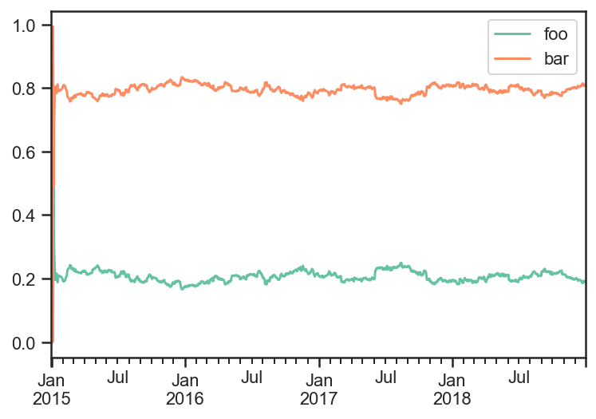
Now use the PTE rebalance algo to trigger a rebalance whenever predicted tracking error is greater than 1%.
# algo to fire whenever predicted tracking error is greater than 1%
wdf = res_target.get_security_weights()
PTE_rebalance_Algo = bt.algos.PTE_Rebalance(
0.01,
wdf,
lookback=pd.DateOffset(months=3),
lag=pd.DateOffset(days=1),
covar_method='standard',
annualization_factor=252
)
selectTheseAlgo = bt.algos.SelectThese(['foo','bar'])
# algo to set the weights to 1/vol contributions from each asset
# with data over the last 12 months excluding yesterday
weighTargetAlgo = bt.algos.WeighTarget(
wdf
)
rebalAlgo = bt.algos.Rebalance()
# a strategy that rebalances monthly to specified weights
strat = bt.Strategy(
'PTE',
[
PTE_rebalance_Algo,
selectTheseAlgo,
weighTargetAlgo,
rebalAlgo
]
)
# set integer_positions=False when positions are not required to be integers(round numbers)
backtest = bt.Backtest(
strat,
pdf,
integer_positions=False
)
res_PTE = bt.run(backtest)
fig, ax = plt.subplots(nrows=1,ncols=1)
res_target.get_security_weights().plot(ax=ax)
realized_weights_df = res_PTE.get_security_weights()
realized_weights_df['PTE foo'] = realized_weights_df['foo']
realized_weights_df['PTE bar'] = realized_weights_df['bar']
realized_weights_df = realized_weights_df.loc[:,['PTE foo', 'PTE bar']]
realized_weights_df.plot(ax=ax)
ax.set_title('Target Weights vs PTE Weights')
ax.plot();
{kind=link}
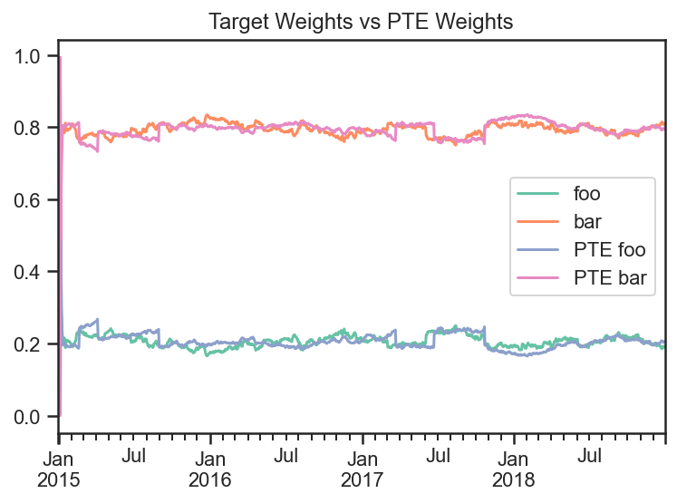
trans_df = pd.DataFrame(
index=res_target.prices.index,
columns=['Target','PTE']
)
transactions = res_target.get_transactions()
transactions = (transactions['quantity'] * transactions['price']).reset_index()
bar_mask = transactions.loc[:,'Security'] == 'bar'
foo_mask = transactions.loc[:,'Security'] == 'foo'
trans_df.loc[trans_df.index[4:],'Target'] = np.abs(transactions[bar_mask].iloc[:,2].values) + np.abs(transactions[foo_mask].iloc[:,2].values)
transactions = res_PTE.get_transactions()
transactions = (transactions['quantity'] * transactions['price']).reset_index()
bar_mask = transactions.loc[:,'Security'] == 'bar'
foo_mask = transactions.loc[:,'Security'] == 'foo'
trans_df.loc[transactions[bar_mask].iloc[:,0],'PTE'] = np.abs(transactions[bar_mask].iloc[:,2].values)
trans_df.loc[transactions[foo_mask].iloc[:,0],'PTE'] += np.abs(transactions[foo_mask].iloc[:,2].values)
trans_df = trans_df.fillna(0)
fig, ax = plt.subplots(nrows=1,ncols=1)
trans_df.cumsum().plot(ax=ax)
ax.set_title('Cumulative sum of notional traded')
ax.plot();
{kind=link}
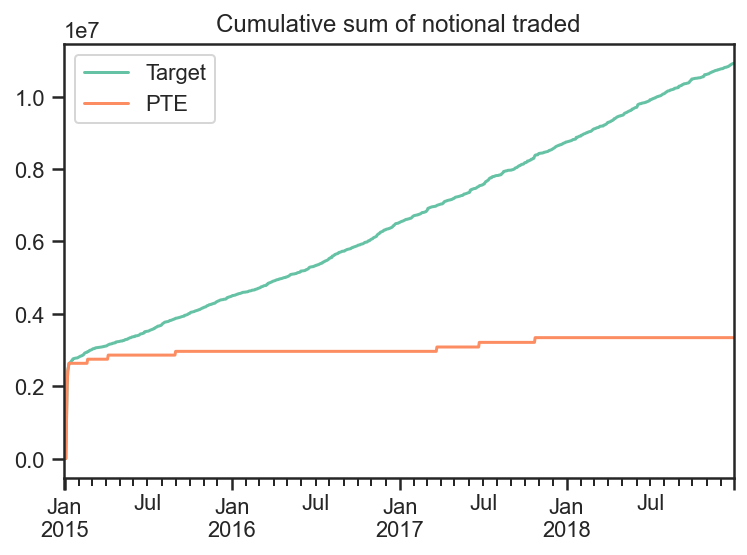
If we plot the total risk contribution of each asset class and divide by the total volatility, then we can see that both strategy’s contribute roughly similar amounts of volatility from both of the securities.
weights_target = res_target.get_security_weights()
rolling_cov_target = pdf.loc[:,weights_target.columns].pct_change().rolling(window=3*20).cov()*252
weights_PTE = res_PTE.get_security_weights().loc[:,weights_target.columns]
rolling_cov_PTE = pdf.loc[:,weights_target.columns].pct_change().rolling(window=3*20).cov()*252
trc_target = pd.DataFrame(
np.nan,
index = weights_target.index,
columns = weights_target.columns
)
trc_PTE = pd.DataFrame(
np.nan,
index = weights_PTE.index,
columns = [x + " PTE" for x in weights_PTE.columns]
)
for dt in pdf.index:
trc_target.loc[dt,:] = weights_target.loc[dt,:].values*(rolling_cov_target.loc[dt,:].values@weights_target.loc[dt,:].values)/np.sqrt(weights_target.loc[dt,:].values@rolling_cov_target.loc[dt,:].values@weights_target.loc[dt,:].values)
trc_PTE.loc[dt,:] = weights_PTE.loc[dt,:].values*(rolling_cov_PTE.loc[dt,:].values@weights_PTE.loc[dt,:].values)/np.sqrt(weights_PTE.loc[dt,:].values@rolling_cov_PTE.loc[dt,:].values@weights_PTE.loc[dt,:].values)
fig, ax = plt.subplots(nrows=1,ncols=1)
trc_target.plot(ax=ax)
trc_PTE.plot(ax=ax)
ax.set_title('Total Risk Contribution')
ax.plot();
{kind=link}
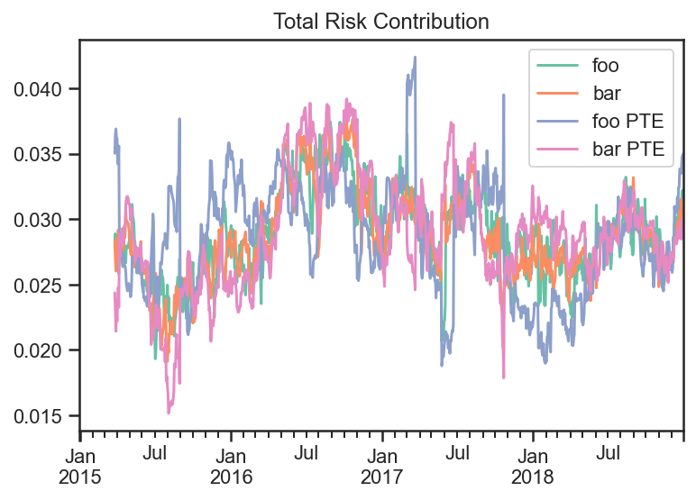
Looking at the Target strategy’s and PTE strategy’s Total Risk they are very similar.
fig, ax = plt.subplots(nrows=1,ncols=1)
trc_target.sum(axis=1).plot(ax=ax,label='Target')
trc_PTE.sum(axis=1).plot(ax=ax,label='PTE')
ax.legend()
ax.set_title('Total Risk')
ax.plot();
{kind=link}
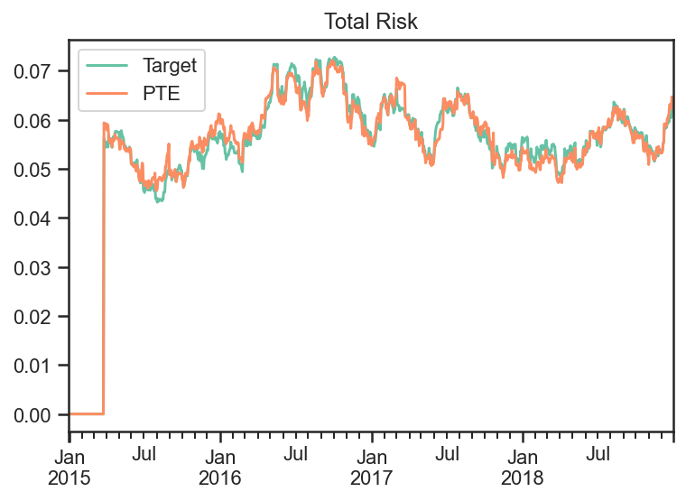
transactions = res_PTE.get_transactions()
transactions = (transactions['quantity'] * transactions['price']).reset_index()
bar_mask = transactions.loc[:,'Security'] == 'bar'
dates_of_PTE_transactions = transactions[bar_mask].iloc[:,0]
dates_of_PTE_transactions
0 2015-01-06
2 2015-01-07
4 2015-01-08
6 2015-01-09
8 2015-01-12
10 2015-02-20
12 2015-04-07
14 2015-09-01
16 2017-03-23
18 2017-06-23
20 2017-10-24
Name: Date, dtype: datetime64[ns]
fig, ax = plt.subplots(nrows=1,ncols=1)
np.sum(np.abs(trc_target.values - trc_PTE.values))
#.abs().sum(axis=1).plot()
ax.set_title('Total Risk')
ax.plot(
trc_target.index,
np.sum(np.abs(trc_target.values - trc_PTE.values),axis=1),
label='PTE'
)
for i,dt in enumerate(dates_of_PTE_transactions):
if i == 0:
ax.axvline(x=dt,color='red',label='PTE Transaction')
else:
ax.axvline(x=dt,color='red')
ax.legend();
{kind=link}
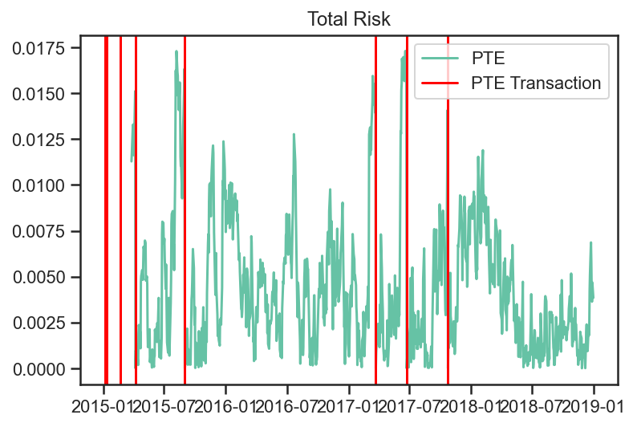
We can see the Predicted Tracking Error of the PTE Strategy with each transaction marked.
Fixed Income Examples¶
This example notebook illustrates some of the more sophisticated functionality of the package, especially related to fixed income securities and strategies. For fixed income strategies:
capital allocations are not necessary, and initial capital is not used
bankruptcy is disabled (as money can always be borrowed at some rate, potentially represented as another asset)
weights are based off notional_value rather than value. For fixed income securities, notional value is just the position. For non-fixed income securities (i.e. equities), it is the market value of the position.
strategy notional_value is always positive, equal to the sum of the magnitudes of the notional values of all its children
strategy price is computed from additive PNL returns per unit of notional_value, with a reference price of PAR
“rebalancing” the portfolio adjusts notionals rather than capital allocations based on weights
Further to the above characteristics of fixed income strategies, we also demonstrate the usage of the following features which arise in these types of use case:
Coupon paying securities (i.e. bonds)
Handing of security lifecycle such as new issues and maturity
Usage of “On-The-Run” instruments, and rolling of positions into the “new” on-the-run security at pre-defined times
Risk tracking/aggregation and hedging from pre-computed risk per unit notional
The notebook contains the following parts:
Setup
Market data generation
Rolling series of government bonds
Corporate bonds with spreads driven by a common factor
Example 1: Basic Strategies
Weigh all active corporate bond equally
Add hedging of interest rates risk with the on-the-run government bond
Example 2: Nested Strategies
One strategy buys the top N bonds, by yield
Another strategy sells the bottom N bonds, by yield
Parent strategy gives 50% weight to each of the above
Add hedges of remaining interest rates risk with the on-the-run government bond
Setup¶
import bt
import pandas as pd
from pandas.tseries.frequencies import to_offset
import numpy as np
np.random.seed(1234)
%matplotlib inline
# (Approximate) Price to yield calcs, and pvbp, for later use. Note we use clean price here.
def price_to_yield( p, ttm, coupon ):
return ( coupon + (100. - p)/ttm ) / ( ( 100. + p)/2. ) * 100
def yield_to_price( y, ttm, coupon ):
return (coupon + 100/ttm - 0.5 * y) / ( y/200 + 1/ttm)
def pvbp( y, ttm, coupon ):
return (yield_to_price( y + 0.01, ttm, coupon ) - yield_to_price( y, ttm, coupon ))
# Utility function to set data frame values to nan before the security has been issued or after it has matured
def censor( data, ref_data ):
for bond in data:
data.loc[ (data.index > ref_data['mat_date'][bond]) | (data.index < ref_data['issue_date'][bond]), bond] = np.nan
return data.ffill(limit=1,axis=0) # Because bonds might mature during a gap in the index (i.e. on the weekend)
# Backtesting timeline setup
start_date = pd.Timestamp('2020-01-01')
end_date = pd.Timestamp('2022-01-01')
timeline = pd.date_range( start_date, end_date, freq='B')
Market Data Generation¶
# Government Bonds: Create synthetic data for a single series of rolling government bonds
# Reference Data
roll_freq = 'Q'
maturity = 10
coupon = 2.0
roll_dates = pd.date_range( start_date, end_date+to_offset(roll_freq), freq=roll_freq) # Go one period beyond the end date to be safe
issue_dates = roll_dates - roll_dates.freq
mat_dates = issue_dates + pd.offsets.DateOffset(years=maturity)
series_name = 'govt_10Y'
names = pd.Series(mat_dates).apply( lambda x : 'govt_%s' % x.strftime('%Y_%m'))
# Build a time series of OTR
govt_otr = pd.DataFrame( [ [ name for name, roll_date in zip(names, roll_dates) if roll_date >=d ][0] for d in timeline ],
index=timeline,
columns=[series_name])
# Create a data frame of reference data
govt_data = pd.DataFrame( {'mat_date':mat_dates, 'issue_date': issue_dates, 'roll_date':roll_dates}, index = names)
govt_data['coupon'] = coupon
# Create the "roll map"
govt_roll_map = govt_otr.copy()
govt_roll_map['target'] = govt_otr[series_name].shift(-1)
govt_roll_map = govt_roll_map[ govt_roll_map[series_name] != govt_roll_map['target']]
govt_roll_map['factor'] = 1.
govt_roll_map = govt_roll_map.reset_index().set_index(series_name).rename(columns={'index':'date'}).dropna()
# Market Data and Risk
govt_yield_initial = 2.0
govt_yield_vol = 1.
govt_yield = pd.DataFrame( columns = govt_data.index, index=timeline )
govt_yield_ts = (govt_yield_initial + np.cumsum( np.random.normal( 0., govt_yield_vol/np.sqrt(252), len(timeline)))).reshape(-1,1)
govt_yield.loc[:,:] = govt_yield_ts
govt_mat = pd.DataFrame( columns = govt_data.index, index=timeline, data=pd.NA ).astype('datetime64')
govt_mat.loc[:,:] = govt_data['mat_date'].values.T
govt_ttm = (govt_mat - timeline.values.reshape(-1,1))/pd.Timedelta('1Y')
govt_coupon = pd.DataFrame( columns = govt_data.index, index=timeline )
govt_coupon.loc[:,:] = govt_data['coupon'].values.T
govt_accrued = govt_coupon.multiply( timeline.to_series().diff()/pd.Timedelta('1Y'), axis=0 )
govt_accrued.iloc[0] = 0
govt_price = yield_to_price( govt_yield, govt_ttm, govt_coupon )
govt_price[ govt_ttm <= 0 ] = 100.
govt_price = censor(govt_price, govt_data)
govt_pvbp = pvbp( govt_yield, govt_ttm, govt_coupon)
govt_pvbp[ govt_ttm <= 0 ] = 0.
govt_pvbp = censor(govt_pvbp, govt_data)
/opt/homebrew/lib/python3.9/site-packages/IPython/core/interactiveshell.py:3397: FutureWarning: Units 'M', 'Y' and 'y' do not represent unambiguous timedelta values and will be removed in a future version
exec(code_obj, self.user_global_ns, self.user_ns)
# Corporate Bonds: Create synthetic data for a universe of corporate bonds
# Reference Data
n_corp = 50 # Number of corporate bonds to generate
avg_ttm = 10 # Average time to maturity, in years
coupon_mean = 5
coupon_std = 1.5
mat_dates = start_date + np.random.exponential(avg_ttm*365, n_corp).astype(int) * pd.offsets.Day()
issue_dates = np.minimum( mat_dates, end_date ) - np.random.exponential(avg_ttm*365, n_corp).astype(int) * pd.offsets.Day()
names = pd.Series( [ 'corp{:04d}'.format(i) for i in range(n_corp)])
coupons = np.random.normal( coupon_mean, coupon_std, n_corp ).round(3)
corp_data = pd.DataFrame( {'mat_date':mat_dates, 'issue_date': issue_dates, 'coupon':coupons}, index=names)
# Market Data and Risk
# Model: corporate yield = government yield + credit spread
# Model: credit spread changes = beta * common factor changes + idiosyncratic changes
corp_spread_initial = np.random.normal( 2, 1, len(corp_data) )
corp_betas_raw = np.random.normal( 1, 0.5, len(corp_data) )
corp_factor_vol = 0.5
corp_idio_vol = 0.5
corp_factor_ts = np.cumsum( np.random.normal( 0, corp_factor_vol/np.sqrt(252), len(timeline))).reshape(-1,1)
corp_idio_ts = np.cumsum( np.random.normal( 0, corp_idio_vol/np.sqrt(252), len(timeline))).reshape(-1,1)
corp_spread = corp_spread_initial + np.multiply( corp_factor_ts, corp_betas_raw ) + corp_idio_ts
corp_yield = govt_yield_ts + corp_spread
corp_yield = pd.DataFrame( columns = corp_data.index, index=timeline, data = corp_yield )
corp_mat = pd.DataFrame( columns = corp_data.index, index=timeline, data=start_date )
corp_mat.loc[:,:] = corp_data['mat_date'].values.T
corp_ttm = (corp_mat - timeline.values.reshape(-1,1))/pd.Timedelta('1Y')
corp_coupon = pd.DataFrame( columns = corp_data.index, index=timeline )
corp_coupon.loc[:,:] = corp_data['coupon'].values.T
corp_accrued = corp_coupon.multiply( timeline.to_series().diff()/pd.Timedelta('1Y'), axis=0 )
corp_accrued.iloc[0] = 0
corp_price = yield_to_price( corp_yield, corp_ttm, corp_coupon )
corp_price[ corp_ttm <= 0 ] = 100.
corp_price = censor(corp_price, corp_data)
corp_pvbp = pvbp( corp_yield, corp_ttm, corp_coupon)
corp_pvbp[ corp_ttm <= 0 ] = 0.
corp_pvbp = censor(corp_pvbp, corp_data)
bidoffer_bps = 5.
corp_bidoffer = -bidoffer_bps * corp_pvbp
corp_betas = pd.DataFrame( columns = corp_data.index, index=timeline )
corp_betas.loc[:,:] = corp_betas_raw
corp_betas = censor(corp_betas, corp_data)
/opt/homebrew/lib/python3.9/site-packages/IPython/core/interactiveshell.py:3397: FutureWarning: Units 'M', 'Y' and 'y' do not represent unambiguous timedelta values and will be removed in a future version
exec(code_obj, self.user_global_ns, self.user_ns)
Example 1: Basic Strategies¶
# Set up a strategy and a backtest
# The goal here is to define an equal weighted portfolio of corporate bonds,
# and to hedge the rates risk with the rolling series of government bonds
# Define Algo Stacks as the various building blocks
# Note that the order in which we execute these is extremely important
lifecycle_stack = bt.core.AlgoStack(
# Close any matured bond positions (including hedges)
bt.algos.ClosePositionsAfterDates( 'maturity' ),
# Roll government bond positions into the On The Run
bt.algos.RollPositionsAfterDates( 'govt_roll_map' ),
)
risk_stack = bt.AlgoStack(
# Specify how frequently to calculate risk
bt.algos.Or( [bt.algos.RunWeekly(),
bt.algos.RunMonthly()] ),
# Update the risk given any positions that have been put on so far in the current step
bt.algos.UpdateRisk( 'pvbp', history=1),
bt.algos.UpdateRisk( 'beta', history=1),
)
hedging_stack = bt.AlgoStack(
# Specify how frequently to hedge risk
bt.algos.RunMonthly(),
# Select the "alias" for the on-the-run government bond...
bt.algos.SelectThese( [series_name], include_no_data = True ),
# ... and then resolve it to the underlying security for the given date
bt.algos.ResolveOnTheRun( 'govt_otr' ),
# Hedge out the pvbp risk using the selected government bond
bt.algos.HedgeRisks( ['pvbp']),
# Need to update risk again after hedging so that it gets recorded correctly (post-hedges)
bt.algos.UpdateRisk( 'pvbp', history=True),
)
debug_stack = bt.core.AlgoStack(
# Specify how frequently to display debug info
bt.algos.RunMonthly(),
bt.algos.PrintInfo('Strategy {name} : {now}.\tNotional: {_notl_value:0.0f},\t Value: {_value:0.0f},\t Price: {_price:0.4f}'),
bt.algos.PrintRisk('Risk: \tPVBP: {pvbp:0.0f},\t Beta: {beta:0.0f}'),
)
trading_stack =bt.core.AlgoStack(
# Specify how frequently to rebalance the portfolio
bt.algos.RunMonthly(),
# Select instruments for rebalancing. Start with everything
bt.algos.SelectAll(),
# Prevent matured/rolled instruments from coming back into the mix
bt.algos.SelectActive(),
# Select only corp instruments
bt.algos.SelectRegex( 'corp' ),
# Specify how to weigh the securities
bt.algos.WeighEqually(),
# Set the target portfolio size
bt.algos.SetNotional( 'notional_value' ),
# Rebalance the portfolio
bt.algos.Rebalance()
)
govt_securities = [ bt.CouponPayingHedgeSecurity( name ) for name in govt_data.index]
corp_securities = [ bt.CouponPayingSecurity( name ) for name in corp_data.index ]
securities = govt_securities + corp_securities
base_strategy = bt.FixedIncomeStrategy('BaseStrategy', [ lifecycle_stack, bt.algos.Or( [trading_stack, risk_stack, debug_stack ] ) ], children = securities)
hedged_strategy = bt.FixedIncomeStrategy('HedgedStrategy', [ lifecycle_stack, bt.algos.Or( [trading_stack, risk_stack, hedging_stack, debug_stack ] ) ], children = securities)
#Collect all the data for the strategies
# Here we use clean prices as the data and accrued as the coupon. Could alternatively use dirty prices and cashflows.
data = pd.concat( [ govt_price, corp_price ], axis=1) / 100. # Because we need prices per unit notional
additional_data = { 'coupons' : pd.concat([govt_accrued, corp_accrued], axis=1) / 100.,
'bidoffer' : corp_bidoffer/100.,
'notional_value' : pd.Series( data=1e6, index=data.index ),
'maturity' : pd.concat([govt_data, corp_data], axis=0).rename(columns={"mat_date": "date"}),
'govt_roll_map' : govt_roll_map,
'govt_otr' : govt_otr,
'unit_risk' : {'pvbp' : pd.concat( [ govt_pvbp, corp_pvbp] ,axis=1)/100.,
'beta' : corp_betas * corp_pvbp / 100.},
}
base_test = bt.Backtest( base_strategy, data, 'BaseBacktest',
initial_capital = 0,
additional_data = additional_data )
hedge_test = bt.Backtest( hedged_strategy, data, 'HedgedBacktest',
initial_capital = 0,
additional_data = additional_data)
out = bt.run( base_test, hedge_test )
Strategy BaseStrategy : 2020-01-01 00:00:00. Notional: 1000000, Value: -1644, Price: 99.8356
Risk: PVBP: -658, Beta: -659
Strategy BaseStrategy : 2020-02-03 00:00:00. Notional: 1000000, Value: -6454, Price: 99.3546
Risk: PVBP: -642, Beta: -643
Strategy BaseStrategy : 2020-03-02 00:00:00. Notional: 1000000, Value: -26488, Price: 97.3512
Risk: PVBP: -611, Beta: -613
Strategy BaseStrategy : 2020-04-01 00:00:00. Notional: 1000000, Value: -20295, Price: 97.9705
Risk: PVBP: -607, Beta: -608
Strategy BaseStrategy : 2020-05-01 00:00:00. Notional: 1000000, Value: -43692, Price: 95.6308
Risk: PVBP: -573, Beta: -574
Strategy BaseStrategy : 2020-06-01 00:00:00. Notional: 1000000, Value: -41095, Price: 95.8905
Risk: PVBP: -566, Beta: -566
Strategy BaseStrategy : 2020-07-01 00:00:00. Notional: 1000000, Value: -15724, Price: 98.4985
Risk: PVBP: -609, Beta: -608
Strategy BaseStrategy : 2020-08-03 00:00:00. Notional: 1000000, Value: -22308, Price: 97.8400
Risk: PVBP: -587, Beta: -594
Strategy BaseStrategy : 2020-09-01 00:00:00. Notional: 1000000, Value: 12832, Price: 101.4263
Risk: PVBP: -644, Beta: -650
Strategy BaseStrategy : 2020-10-01 00:00:00. Notional: 1000000, Value: 35263, Price: 103.6965
Risk: PVBP: -683, Beta: -680
Strategy BaseStrategy : 2020-11-02 00:00:00. Notional: 1000000, Value: 3702, Price: 100.5404
Risk: PVBP: -638, Beta: -646
Strategy BaseStrategy : 2020-12-01 00:00:00. Notional: 1000000, Value: -18534, Price: 98.3168
Risk: PVBP: -606, Beta: -613
Strategy BaseStrategy : 2021-01-01 00:00:00. Notional: 1000000, Value: -11054, Price: 99.0648
Risk: PVBP: -603, Beta: -609
Strategy BaseStrategy : 2021-02-01 00:00:00. Notional: 1000000, Value: -16424, Price: 98.5537
Risk: PVBP: -602, Beta: -609
Strategy BaseStrategy : 2021-03-01 00:00:00. Notional: 1000000, Value: -34462, Price: 96.6943
Risk: PVBP: -603, Beta: -586
Strategy BaseStrategy : 2021-04-01 00:00:00. Notional: 1000000, Value: -23533, Price: 97.7872
Risk: PVBP: -603, Beta: -586
Strategy BaseStrategy : 2021-05-03 00:00:00. Notional: 1000000, Value: -27024, Price: 97.4381
Risk: PVBP: -590, Beta: -574
Strategy BaseStrategy : 2021-06-01 00:00:00. Notional: 1000000, Value: -50723, Price: 95.0682
Risk: PVBP: -558, Beta: -541
Strategy BaseStrategy : 2021-07-01 00:00:00. Notional: 1000000, Value: -52714, Price: 94.8690
Risk: PVBP: -547, Beta: -528
Strategy BaseStrategy : 2021-08-02 00:00:00. Notional: 1000000, Value: -53039, Price: 94.8067
Risk: PVBP: -550, Beta: -531
Strategy BaseStrategy : 2021-09-01 00:00:00. Notional: 1000000, Value: -39027, Price: 96.2079
Risk: PVBP: -550, Beta: -524
Strategy BaseStrategy : 2021-10-01 00:00:00. Notional: 1000000, Value: -2051, Price: 99.9002
Risk: PVBP: -588, Beta: -561
Strategy BaseStrategy : 2021-11-01 00:00:00. Notional: 1000000, Value: -8616, Price: 99.2438
Risk: PVBP: -573, Beta: -544
Strategy BaseStrategy : 2021-12-01 00:00:00. Notional: 1000000, Value: 53520, Price: 105.6538
Risk: PVBP: -656, Beta: -623
Strategy HedgedStrategy : 2020-01-01 00:00:00. Notional: 1000000, Value: -1644, Price: 99.8356
Risk: PVBP: 0, Beta: -659
Strategy HedgedStrategy : 2020-02-03 00:00:00. Notional: 1000000, Value: -10996, Price: 98.9004
Risk: PVBP: 0, Beta: -643
Strategy HedgedStrategy : 2020-03-02 00:00:00. Notional: 1000000, Value: -16765, Price: 98.3235
Risk: PVBP: 0, Beta: -613
Strategy HedgedStrategy : 2020-04-01 00:00:00. Notional: 1000000, Value: -21649, Price: 97.8351
Risk: PVBP: -0, Beta: -608
Strategy HedgedStrategy : 2020-05-01 00:00:00. Notional: 1000000, Value: -33399, Price: 96.6601
Risk: PVBP: 0, Beta: -574
Strategy HedgedStrategy : 2020-06-01 00:00:00. Notional: 1000000, Value: -22927, Price: 97.7073
Risk: PVBP: -0, Beta: -566
Strategy HedgedStrategy : 2020-07-01 00:00:00. Notional: 1000000, Value: -14965, Price: 98.5366
Risk: PVBP: -0, Beta: -608
Strategy HedgedStrategy : 2020-08-03 00:00:00. Notional: 1000000, Value: 5092, Price: 100.5423
Risk: PVBP: -0, Beta: -594
Strategy HedgedStrategy : 2020-09-01 00:00:00. Notional: 1000000, Value: 22278, Price: 102.2828
Risk: PVBP: 0, Beta: -650
Strategy HedgedStrategy : 2020-10-01 00:00:00. Notional: 1000000, Value: 13903, Price: 101.4286
Risk: PVBP: -0, Beta: -680
Strategy HedgedStrategy : 2020-11-02 00:00:00. Notional: 1000000, Value: 12081, Price: 101.2464
Risk: PVBP: -0, Beta: -646
Strategy HedgedStrategy : 2020-12-01 00:00:00. Notional: 1000000, Value: 10531, Price: 101.0914
Risk: PVBP: -0, Beta: -613
Strategy HedgedStrategy : 2021-01-01 00:00:00. Notional: 1000000, Value: 12144, Price: 101.2528
Risk: PVBP: 0, Beta: -609
Strategy HedgedStrategy : 2021-02-01 00:00:00. Notional: 1000000, Value: 15903, Price: 101.6469
Risk: PVBP: -0, Beta: -609
Strategy HedgedStrategy : 2021-03-01 00:00:00. Notional: 1000000, Value: 11958, Price: 101.2204
Risk: PVBP: 0, Beta: -586
Strategy HedgedStrategy : 2021-04-01 00:00:00. Notional: 1000000, Value: 28170, Price: 102.8417
Risk: PVBP: -0, Beta: -586
Strategy HedgedStrategy : 2021-05-03 00:00:00. Notional: 1000000, Value: 34561, Price: 103.4807
Risk: PVBP: 0, Beta: -574
Strategy HedgedStrategy : 2021-06-01 00:00:00. Notional: 1000000, Value: 29233, Price: 102.9479
Risk: PVBP: -0, Beta: -541
Strategy HedgedStrategy : 2021-07-01 00:00:00. Notional: 1000000, Value: 10323, Price: 101.0569
Risk: PVBP: 0, Beta: -528
Strategy HedgedStrategy : 2021-08-02 00:00:00. Notional: 1000000, Value: 14539, Price: 101.4646
Risk: PVBP: 0, Beta: -531
Strategy HedgedStrategy : 2021-09-01 00:00:00. Notional: 1000000, Value: 10754, Price: 101.0860
Risk: PVBP: 0, Beta: -524
Strategy HedgedStrategy : 2021-10-01 00:00:00. Notional: 1000000, Value: 32502, Price: 103.2515
Risk: PVBP: -0, Beta: -561
Strategy HedgedStrategy : 2021-11-01 00:00:00. Notional: 1000000, Value: 24506, Price: 102.4519
Risk: PVBP: -0, Beta: -544
Strategy HedgedStrategy : 2021-12-01 00:00:00. Notional: 1000000, Value: 42093, Price: 104.2905
Risk: PVBP: -0, Beta: -623
# Extract Tear Sheet for base backtest
stats = out['BaseBacktest']
stats.display()
Stats for BaseBacktest from 2019-12-31 00:00:00 - 2021-12-31 00:00:00
Annual risk-free rate considered: 0.00%
Summary:
Total Return Sharpe CAGR Max Drawdown
-------------- -------- ------ --------------
2.34% 0.19 1.16% -10.64%
Annualized Returns:
mtd 3m 6m ytd 1y 3y 5y 10y incep.
------ ----- ----- ----- ----- ----- ---- ----- --------
-3.06% 1.45% 8.12% 3.43% 3.43% 1.16% - - 1.16%
Periodic:
daily monthly yearly
------ ------- --------- --------
sharpe 0.19 0.18 0.38
mean 1.38% 1.49% 1.19%
vol 7.26% 8.35% 3.17%
skew 0.16 0.75 -
kurt 0.52 0.70 -
best 1.59% 6.32% 3.43%
worst -1.44% -3.29% -1.05%
Drawdowns:
max avg # days
------- ------ --------
-10.64% -2.59% 79.22
Misc:
--------------- ------
avg. up month 1.88%
avg. down month -1.63%
up year % 50.00%
12m up % 57.14%
--------------- ------
# Extract Tear Sheet for hedged backtest
stats = out['HedgedBacktest']
stats.display()
Stats for HedgedBacktest from 2019-12-31 00:00:00 - 2021-12-31 00:00:00
Annual risk-free rate considered: 0.00%
Summary:
Total Return Sharpe CAGR Max Drawdown
-------------- -------- ------ --------------
3.51% 0.41 1.74% -3.87%
Annualized Returns:
mtd 3m 6m ytd 1y 3y 5y 10y incep.
------ ------ ----- ----- ----- ----- ---- ----- --------
-0.47% -0.30% 2.29% 2.46% 2.46% 1.74% - - 1.74%
Periodic:
daily monthly yearly
------ ------- --------- --------
sharpe 0.41 0.43 1.71
mean 1.75% 1.81% 1.74%
vol 4.26% 4.22% 1.02%
skew -0.17 0.67 -
kurt 0.21 -0.46 -
best 0.69% 2.82% 2.46%
worst -1.07% -1.62% 1.02%
Drawdowns:
max avg # days
------ ------ --------
-3.87% -1.02% 49.57
Misc:
--------------- -------
avg. up month 1.25%
avg. down month -0.78%
up year % 100.00%
12m up % 85.71%
--------------- -------
# Total PNL time series values
pd.DataFrame( {'base':base_test.strategy.values, 'hedged':hedge_test.strategy.values} ).plot();
{kind=link}
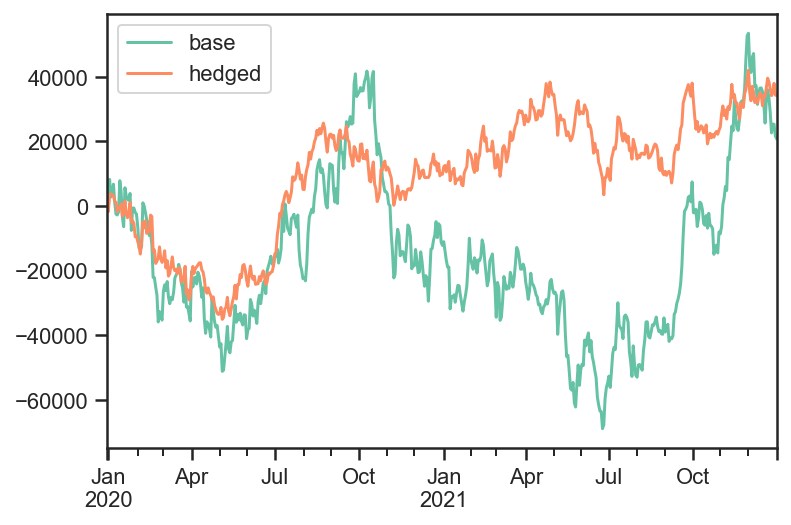
# Total risk time series values
pd.DataFrame( {'base_pvbp':base_test.strategy.risks['pvbp'],
'hedged_pvbp':hedge_test.strategy.risks['pvbp'],
'beta':hedge_test.strategy.risks['beta']} ).dropna().plot();
{kind=link}
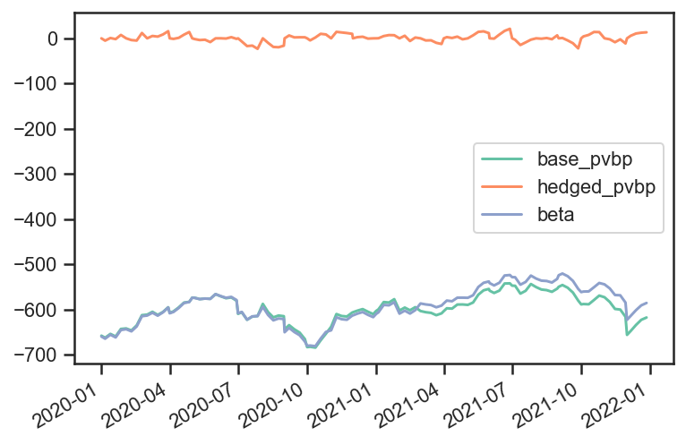
# Total bid/offer paid (same for both strategies)
pd.DataFrame( {'base_pvbp':base_test.strategy.bidoffers_paid,
'hedged_pvbp':hedge_test.strategy.bidoffers_paid }).cumsum().dropna().plot();
{kind=link}
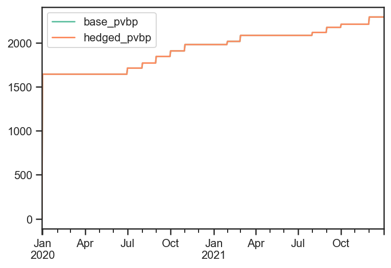
Example 2: Nested Strategies¶
# Set up a more complex strategy and a backtest
# The goal of the more complex strategy is to define two sub-strategies of corporate bonds
# - Highest yield bonds
# - Lowest yield bonds
# Then we will go long the high yield bonds, short the low yield bonds in equal weight
# Lastly we will hedge the rates risk with the government bond
govt_securities = [ bt.CouponPayingHedgeSecurity( name ) for name in govt_data.index]
corp_securities = [ bt.CouponPayingSecurity( name ) for name in corp_data.index ]
def get_algos( n, sort_descending ):
''' Helper function to return the algos for long or short portfolio, based on top n yields'''
return [
# Close any matured bond positions
bt.algos.ClosePositionsAfterDates( 'corp_maturity' ),
# Specify how frequenty to rebalance
bt.algos.RunMonthly(),
# Select instruments for rebalancing. Start with everything
bt.algos.SelectAll(),
# Prevent matured/rolled instruments from coming back into the mix
bt.algos.SelectActive(),
# Set the stat to be used for selection
bt.algos.SetStat( 'corp_yield' ),
# Select the top N yielding bonds
bt.algos.SelectN( n, sort_descending, filter_selected=True ),
# Specify how to weigh the securities
bt.algos.WeighEqually(),
bt.algos.ScaleWeights(1. if sort_descending else -1.), # Determine long/short
# Set the target portfolio size
bt.algos.SetNotional( 'notional_value' ),
# Rebalance the portfolio
bt.algos.Rebalance(),
]
bottom_algos = []
top_strategy = bt.FixedIncomeStrategy('TopStrategy', get_algos( 10, True ), children = corp_securities)
bottom_strategy = bt.FixedIncomeStrategy('BottomStrategy',get_algos( 10, False ), children = corp_securities)
risk_stack = bt.AlgoStack(
# Specify how frequently to calculate risk
bt.algos.Or( [bt.algos.RunWeekly(),
bt.algos.RunMonthly()] ),
# Update the risk given any positions that have been put on so far in the current step
bt.algos.UpdateRisk( 'pvbp', history=2),
bt.algos.UpdateRisk( 'beta', history=2),
)
hedging_stack = bt.AlgoStack(
# Close any matured hedge positions (including hedges)
bt.algos.ClosePositionsAfterDates( 'govt_maturity' ),
# Roll government bond positions into the On The Run
bt.algos.RollPositionsAfterDates( 'govt_roll_map' ),
# Specify how frequently to hedge risk
bt.algos.RunMonthly(),
# Select the "alias" for the on-the-run government bond...
bt.algos.SelectThese( [series_name], include_no_data = True ),
# ... and then resolve it to the underlying security for the given date
bt.algos.ResolveOnTheRun( 'govt_otr' ),
# Hedge out the pvbp risk using the selected government bond
bt.algos.HedgeRisks( ['pvbp']),
# Need to update risk again after hedging so that it gets recorded correctly (post-hedges)
bt.algos.UpdateRisk( 'pvbp', history=2),
)
debug_stack = bt.core.AlgoStack(
# Specify how frequently to display debug info
bt.algos.RunMonthly(),
bt.algos.PrintInfo('{now}: End {name}\tNotional: {_notl_value:0.0f},\t Value: {_value:0.0f},\t Price: {_price:0.4f}'),
bt.algos.PrintRisk('Risk: \tPVBP: {pvbp:0.0f},\t Beta: {beta:0.0f}'),
)
trading_stack =bt.core.AlgoStack(
# Specify how frequently to rebalance the portfolio of sub-strategies
bt.algos.RunOnce(),
# Specify how to weigh the sub-strategies
bt.algos.WeighSpecified( TopStrategy=0.5, BottomStrategy=-0.5),
# Rebalance the portfolio
bt.algos.Rebalance()
)
children = [ top_strategy, bottom_strategy ] + govt_securities
base_strategy = bt.FixedIncomeStrategy('BaseStrategy', [ bt.algos.Or( [trading_stack, risk_stack, debug_stack ] ) ], children = children)
hedged_strategy = bt.FixedIncomeStrategy('HedgedStrategy', [ bt.algos.Or( [trading_stack, risk_stack, hedging_stack, debug_stack ] ) ], children = children)
# Here we use clean prices as the data and accrued as the coupon. Could alternatively use dirty prices and cashflows.
data = pd.concat( [ govt_price, corp_price ], axis=1) / 100. # Because we need prices per unit notional
additional_data = { 'coupons' : pd.concat([govt_accrued, corp_accrued], axis=1) / 100., # Because we need coupons per unit notional
'notional_value' : pd.Series( data=1e6, index=data.index ),
'govt_maturity' : govt_data.rename(columns={"mat_date": "date"}),
'corp_maturity' : corp_data.rename(columns={"mat_date": "date"}),
'govt_roll_map' : govt_roll_map,
'govt_otr' : govt_otr,
'corp_yield' : corp_yield,
'unit_risk' : {'pvbp' : pd.concat( [ govt_pvbp, corp_pvbp] ,axis=1)/100.,
'beta' : corp_betas * corp_pvbp / 100.},
}
base_test = bt.Backtest( base_strategy, data, 'BaseBacktest',
initial_capital = 0,
additional_data = additional_data)
hedge_test = bt.Backtest( hedged_strategy, data, 'HedgedBacktest',
initial_capital = 0,
additional_data = additional_data)
out = bt.run( base_test, hedge_test )
2020-01-01 00:00:00: End BaseStrategy Notional: 0, Value: 0, Price: 100.0000
Risk: PVBP: 0, Beta: 0
2020-02-03 00:00:00: End BaseStrategy Notional: 2000000, Value: 3277, Price: 100.1639
Risk: PVBP: 51, Beta: 41
2020-03-02 00:00:00: End BaseStrategy Notional: 2000000, Value: 7297, Price: 100.3649
Risk: PVBP: 45, Beta: 34
2020-04-01 00:00:00: End BaseStrategy Notional: 2000000, Value: 9336, Price: 100.4668
Risk: PVBP: 44, Beta: 34
2020-05-01 00:00:00: End BaseStrategy Notional: 2000000, Value: 13453, Price: 100.6727
Risk: PVBP: 38, Beta: 28
2020-06-01 00:00:00: End BaseStrategy Notional: 2000000, Value: 15887, Price: 100.7943
Risk: PVBP: 37, Beta: 26
2020-07-01 00:00:00: End BaseStrategy Notional: 1800000, Value: 16024, Price: 100.8010
Risk: PVBP: 39, Beta: 28
2020-08-03 00:00:00: End BaseStrategy Notional: 2000000, Value: 14785, Price: 100.7391
Risk: PVBP: -152, Beta: -124
2020-09-01 00:00:00: End BaseStrategy Notional: 1800000, Value: 30310, Price: 101.5550
Risk: PVBP: -263, Beta: -204
2020-10-01 00:00:00: End BaseStrategy Notional: 1900000, Value: 35915, Price: 101.8430
Risk: PVBP: -109, Beta: -53
2020-11-02 00:00:00: End BaseStrategy Notional: 2000000, Value: 37649, Price: 101.9297
Risk: PVBP: -12, Beta: 36
2020-12-01 00:00:00: End BaseStrategy Notional: 2000000, Value: 39045, Price: 101.9995
Risk: PVBP: -13, Beta: 34
2021-01-01 00:00:00: End BaseStrategy Notional: 2000000, Value: 40569, Price: 102.0758
Risk: PVBP: -14, Beta: 31
2021-02-01 00:00:00: End BaseStrategy Notional: 1900000, Value: 41228, Price: 102.1094
Risk: PVBP: -16, Beta: 27
2021-03-01 00:00:00: End BaseStrategy Notional: 1900000, Value: 38916, Price: 101.9868
Risk: PVBP: -101, Beta: -47
2021-04-01 00:00:00: End BaseStrategy Notional: 2000000, Value: 40755, Price: 102.0788
Risk: PVBP: 9, Beta: -31
2021-05-03 00:00:00: End BaseStrategy Notional: 2000000, Value: 43290, Price: 102.2055
Risk: PVBP: -6, Beta: -43
2021-06-01 00:00:00: End BaseStrategy Notional: 2000000, Value: 35947, Price: 101.8384
Risk: PVBP: -235, Beta: -91
2021-07-01 00:00:00: End BaseStrategy Notional: 2000000, Value: 35671, Price: 101.8246
Risk: PVBP: -123, Beta: -129
2021-08-02 00:00:00: End BaseStrategy Notional: 2000000, Value: 37756, Price: 101.9288
Risk: PVBP: 3, Beta: -29
2021-09-01 00:00:00: End BaseStrategy Notional: 2000000, Value: 38434, Price: 101.9627
Risk: PVBP: -7, Beta: -43
2021-10-01 00:00:00: End BaseStrategy Notional: 1900000, Value: 37082, Price: 101.8966
Risk: PVBP: 73, Beta: 19
2021-11-01 00:00:00: End BaseStrategy Notional: 2000000, Value: 39526, Price: 102.0187
Risk: PVBP: 51, Beta: 53
2021-12-01 00:00:00: End BaseStrategy Notional: 1900000, Value: 29228, Price: 101.4826
Risk: PVBP: 125, Beta: 97
2020-01-01 00:00:00: End HedgedStrategy Notional: 0, Value: 0, Price: 100.0000
Risk: PVBP: 0, Beta: 0
2020-02-03 00:00:00: End HedgedStrategy Notional: 2000000, Value: 3277, Price: 100.1639
Risk: PVBP: 0, Beta: 41
2020-03-02 00:00:00: End HedgedStrategy Notional: 2000000, Value: 6159, Price: 100.3079
Risk: PVBP: 0, Beta: 34
2020-04-01 00:00:00: End HedgedStrategy Notional: 2000000, Value: 9008, Price: 100.4504
Risk: PVBP: 0, Beta: 34
2020-05-01 00:00:00: End HedgedStrategy Notional: 2000000, Value: 12274, Price: 100.6137
Risk: PVBP: 0, Beta: 28
2020-06-01 00:00:00: End HedgedStrategy Notional: 2000000, Value: 14189, Price: 100.7094
Risk: PVBP: 0, Beta: 26
2020-07-01 00:00:00: End HedgedStrategy Notional: 1800000, Value: 15451, Price: 100.7752
Risk: PVBP: 0, Beta: 28
2020-08-03 00:00:00: End HedgedStrategy Notional: 2000000, Value: 12494, Price: 100.6273
Risk: PVBP: 0, Beta: -124
2020-09-01 00:00:00: End HedgedStrategy Notional: 1800000, Value: 23384, Price: 101.1967
Risk: PVBP: 0, Beta: -204
2020-10-01 00:00:00: End HedgedStrategy Notional: 1900000, Value: 16414, Price: 100.8372
Risk: PVBP: -0, Beta: -53
2020-11-02 00:00:00: End HedgedStrategy Notional: 2000000, Value: 22887, Price: 101.1609
Risk: PVBP: 0, Beta: 36
2020-12-01 00:00:00: End HedgedStrategy Notional: 2000000, Value: 24681, Price: 101.2506
Risk: PVBP: 0, Beta: 34
2021-01-01 00:00:00: End HedgedStrategy Notional: 2000000, Value: 26080, Price: 101.3205
Risk: PVBP: -0, Beta: 31
2021-02-01 00:00:00: End HedgedStrategy Notional: 1900000, Value: 26954, Price: 101.3647
Risk: PVBP: 0, Beta: 27
2021-03-01 00:00:00: End HedgedStrategy Notional: 1900000, Value: 25008, Price: 101.2611
Risk: PVBP: 0, Beta: -47
2021-04-01 00:00:00: End HedgedStrategy Notional: 2000000, Value: 27730, Price: 101.3972
Risk: PVBP: 0, Beta: -31
2021-05-03 00:00:00: End HedgedStrategy Notional: 2000000, Value: 30112, Price: 101.5163
Risk: PVBP: 0, Beta: -43
2021-06-01 00:00:00: End HedgedStrategy Notional: 2000000, Value: 22951, Price: 101.1582
Risk: PVBP: -0, Beta: -91
2021-07-01 00:00:00: End HedgedStrategy Notional: 2000000, Value: 15553, Price: 100.7884
Risk: PVBP: 0, Beta: -129
2021-08-02 00:00:00: End HedgedStrategy Notional: 2000000, Value: 18657, Price: 100.9436
Risk: PVBP: 0, Beta: -29
2021-09-01 00:00:00: End HedgedStrategy Notional: 2000000, Value: 19441, Price: 100.9827
Risk: PVBP: 0, Beta: -43
2021-10-01 00:00:00: End HedgedStrategy Notional: 1900000, Value: 17903, Price: 100.9072
Risk: PVBP: 0, Beta: 19
2021-11-01 00:00:00: End HedgedStrategy Notional: 2000000, Value: 20524, Price: 101.0383
Risk: PVBP: 0, Beta: 53
2021-12-01 00:00:00: End HedgedStrategy Notional: 1900000, Value: 14170, Price: 100.7071
Risk: PVBP: 0, Beta: 97
# Total PNL time series values
pd.DataFrame( {'base':base_test.strategy.values,
'hedged':hedge_test.strategy.values,
'top':base_test.strategy['TopStrategy'].values,
'bottom':base_test.strategy['BottomStrategy'].values}
).plot();
{kind=link}
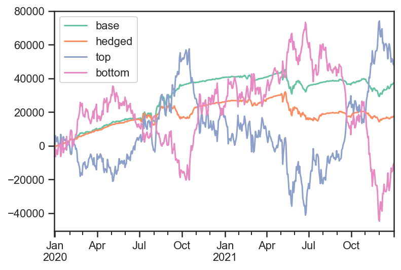
# Total pvbp time series values
pd.DataFrame( {'base':base_test.strategy.risks['pvbp'],
'hedged':hedge_test.strategy.risks['pvbp'],
'top':base_test.strategy['TopStrategy'].risks['pvbp'],
'bottom':base_test.strategy['BottomStrategy'].risks['pvbp']}
).dropna().plot();
{kind=link}
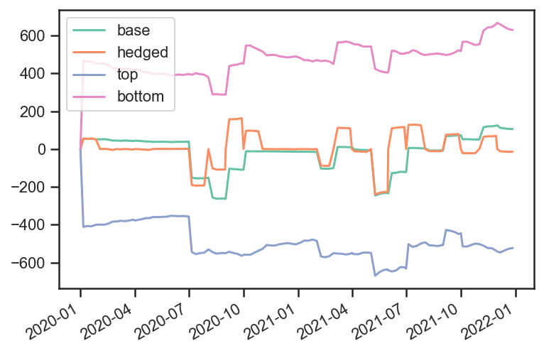
# Total beta time series values
pd.DataFrame( {'base':base_test.strategy.risks['beta'],
'hedged':hedge_test.strategy.risks['beta'],
'top':base_test.strategy['TopStrategy'].risks['beta'],
'bottom':base_test.strategy['BottomStrategy'].risks['beta']}
).dropna().plot();
{kind=link}
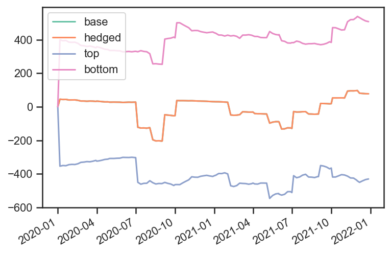
# "Price" time series values
pd.DataFrame( {'base':base_test.strategy.prices,
'hedged':hedge_test.strategy.prices,
'top':base_test.strategy['TopStrategy'].prices,
'bottom':base_test.strategy['BottomStrategy'].prices}
).plot();
{kind=link}
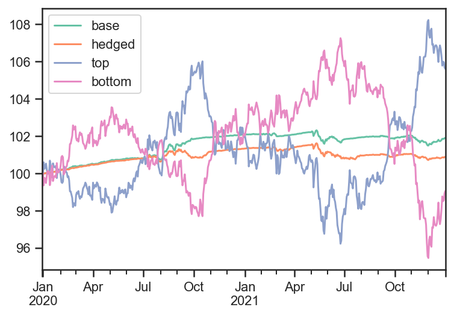
# Show transactions
out.get_transactions('HedgedBacktest').head(20)
| price | quantity | ||
|---|---|---|---|
| Date | Security | ||
| 2020-01-01 | corp0000 | 1.009697 | -100000.0 |
| corp0001 | 0.991417 | 100000.0 | |
| corp0002 | 1.016553 | -100000.0 | |
| corp0005 | 1.035779 | -100000.0 | |
| corp0009 | 1.014195 | 100000.0 | |
| corp0015 | 0.849097 | 100000.0 | |
| corp0017 | 1.018107 | -100000.0 | |
| corp0018 | 1.009549 | 100000.0 | |
| corp0019 | 0.908531 | 100000.0 | |
| corp0023 | 1.216847 | 100000.0 | |
| corp0024 | 1.094375 | -100000.0 | |
| corp0025 | 1.054762 | -100000.0 | |
| corp0030 | 0.888091 | 100000.0 | |
| corp0032 | 1.086487 | -100000.0 | |
| corp0035 | 0.996676 | 100000.0 | |
| corp0036 | 1.070212 | -100000.0 | |
| corp0037 | 0.992530 | 100000.0 | |
| corp0044 | 0.959150 | 100000.0 | |
| corp0048 | 0.987408 | -100000.0 | |
| corp0049 | 1.016879 | -100000.0 |
Nonlinear Cost Models: Almgren-Chriss vs. Default¶
By default bt.Backtest charges no transaction
cost, and even when the legacy commissions=fn(q, p) callable is supplied
the cost depends only on quantity and price. Real trades are more expensive
than that: large orders move the market against the trader, and that move
scales with order size relative to the available liquidity, and with the
instrument’s volatility.
To support nonlinear, size-aware costs, Backtest accepts a
CostModel instance in place of the callable. Two
implementations ship with bt:
SqrtCostModel— the empirical square-root law of impact (Tóth et al. 2011).AlmgrenChrissCostModel— the three-component Almgren & Chriss (2001) decomposition.
When a CostModel is passed as commissions, Backtest also expects
volume and volatility DataFrames aligned with data. Existing usage
with commissions=None or commissions=fn(q, p) is unaffected. This
example uses the AC model on a $1 billion notional book to make impact costs
visible. The design of the cost-model interface follows Abbade & Costa (2026)
[1].
The cost decomposition (Almgren-Chriss):
with defaults alpha=1.0, beta=1.0, epsilon=0.0005 (5 bps
half-spread, typical for liquid US large-caps).
import numpy as np
import pandas as pd
import matplotlib.pyplot as plt
import bt
from bt.core import AlmgrenChrissCostModel
%matplotlib inline
np.random.seed(42)
Synthetic Universe¶
Thirty securities, five years of business-day prices on a geometric random
walk. We also fabricate per-security daily volume (~30M shares average,
typical for a large-cap universe) and a 20-day rolling realised volatility
series — these are the inputs the cost model needs that a vanilla
Backtest ignores.
n_securities = 30
dates = pd.date_range('2018-01-01', '2022-12-31', freq='B')
n = len(dates)
tickers = [f'S{i:02d}' for i in range(n_securities)]
mu = np.random.uniform(0.04, 0.12, n_securities) / 252
sig = np.random.uniform(0.15, 0.45, n_securities) / np.sqrt(252)
returns = np.random.randn(n, n_securities) * sig + mu
prices = pd.DataFrame(100 * np.exp(returns.cumsum(axis=0)),
index=dates, columns=tickers)
log_ret = np.log(prices / prices.shift()).fillna(0.0)
volatility = log_ret.rolling(20, min_periods=1).std().fillna(0.02)
volume = pd.DataFrame(
np.random.lognormal(mean=np.log(30_000_000), sigma=0.3,
size=(n, n_securities)),
index=dates, columns=tickers,
)
Strategy¶
Monthly rebalance into the top decile by trailing 6-month return — a classic high-turnover demo that gives the cost model real trades to score.
def momentum_strategy(name):
return bt.Strategy(
name,
[
bt.algos.RunMonthly(),
bt.algos.SelectAll(),
bt.algos.SelectMomentum(n=10, lookback=pd.DateOffset(months=6)),
bt.algos.WeighEqually(),
bt.algos.Rebalance(),
],
)
Run Both Backtests¶
baseline uses bt.Backtest with no commissions, the default
zero-cost assumption. realistic uses the same bt.Backtest but with a
default Almgren-Chriss cost model passed as commissions, plus the
volume and volatility frames the model needs.
INITIAL_CAPITAL = 1_000_000_000.0 # 1 billion USD
baseline = bt.Backtest(
momentum_strategy('baseline (no cost)'),
prices,
initial_capital=INITIAL_CAPITAL,
integer_positions=False,
progress_bar=False,
)
realistic = bt.Backtest(
momentum_strategy('realistic (AC)'),
prices,
commissions=AlmgrenChrissCostModel(alpha=1.0, beta=1.0, epsilon=0.0005),
volume=volume,
volatility=volatility,
initial_capital=INITIAL_CAPITAL,
integer_positions=False,
progress_bar=False,
)
result = bt.run(baseline, realistic)
result.display()
Stat baseline (no cost) realistic (AC)
------------------- -------------------- ----------------
Start 2017-12-31 2017-12-31
End 2022-12-30 2022-12-30
Risk-free rate 0.00% 0.00%
Total Return 26.53% 21.59%
Daily Sharpe 0.51 0.43
Daily Sortino 0.76 ...
Equity Curves¶
The drag from realistic frictions on a $1B book at this turnover is visually obvious — the realistic curve sits below the cost-free baseline by roughly 5 percentage points of total return over five years.
fig, ax = plt.subplots(figsize=(11, 5))
result.prices.plot(ax=ax, lw=1.5)
ax.set_title('Equity curves: cost-free vs Almgren-Chriss frictions ($1B book)')
ax.set_ylabel('Index level (start = 100)')
ax.grid(alpha=0.3)
plt.tight_layout()
plt.show()
Cost Attribution¶
Inspecting fees paid against gross traded notional gives an effective bps per dollar traded — a useful sanity check that the calibration matches realistic expectations for a large-cap book.
def summarise(bkt, label):
fees_total = float(bkt.strategy.fees.sum())
final_value = float(bkt.strategy.values.iloc[-1])
traded_notional = sum(abs(sec.outlays).sum()
for sec in bkt.strategy.securities)
return {
'strategy' : label,
'final equity ($M)' : final_value / 1e6,
'total return (%)' : 100 * (final_value / INITIAL_CAPITAL - 1),
'gross traded ($B)' : traded_notional / 1e9,
'total fees ($M)' : fees_total / 1e6,
'fees / traded (bps)' : 1e4 * fees_total / max(traded_notional, 1.0),
}
pd.DataFrame([summarise(baseline, 'baseline'),
summarise(realistic, 'realistic')]).set_index('strategy')
final equity ($M) total return (%) gross traded ($B) total fees ($M) fees / traded (bps)
strategy
baseline 1265.262743 26.526274 35.432102 0.000000 0.000000
realistic 1215.902289 21.590229 34.717752 46.394005 13.363194
The AC cost works out to ~13 bps per dollar traded — in line with realistic large-cap impact at a few percent of average daily volume.
Sensitivity to Participation Rate¶
The permanent and depth components scale linearly in |q|/V. We can
see this directly by sweeping the available volume — a thinner market
charges more for the same trades.
def run_with_volume_scale(scale):
bkt = bt.Backtest(
momentum_strategy(f'V x {scale}'),
prices,
commissions=AlmgrenChrissCostModel(alpha=1.0, beta=1.0, epsilon=0.0005),
volume=volume * scale,
volatility=volatility,
initial_capital=INITIAL_CAPITAL,
integer_positions=False,
progress_bar=False,
)
bt.run(bkt)
return float(bkt.strategy.fees.sum())
scales = [0.25, 0.5, 1.0, 2.0, 4.0]
fees = [run_with_volume_scale(s) for s in scales]
fig, ax = plt.subplots(figsize=(8, 4))
ax.plot(scales, np.array(fees) / 1e6, marker='o')
ax.set_xscale('log')
ax.set_xlabel('Volume scale (1.0 = baseline)')
ax.set_ylabel('Total fees ($M)')
ax.set_title('Fees vs. available volume (lower V = higher participation)')
ax.grid(alpha=0.3)
plt.tight_layout()
plt.show()
Takeaway¶
Picking the cost model is a first-order modeling choice for any strategy
that trades non-trivial notional relative to available liquidity. A flat
commissions function flatters such strategies by charging a fixed bps
regardless of order size or market depth. Passing a CostModel to
Backtest removes that bias by routing trade quantities through a cost
model that is sensitive to size, volume, and volatility, while leaving
existing callable-based usage of the commissions argument unchanged.
For a flat-bps degenerate behaviour, the AC model with
alpha=0, beta=0, epsilon=bps/1e4 reproduces the legacy commissions
path bit-for-bit.
References¶
Almgren, R., & Chriss, N. (2001). Optimal execution of portfolio transactions. Journal of Risk 3(2), 5-39.
Tóth, B., Lempérière, Y., Deremble, C., de Lataillade, J., Kockelkoren, J., & Bouchaud, J.-P. (2011). Anomalous Price Impact and the Critical Nature of Liquidity in Financial Markets. Physical Review X 1(2), 021006.
Gatheral, J. (2010). No-Dynamic-Arbitrage and Market Impact. Quantitative Finance 10(7), 749-759.